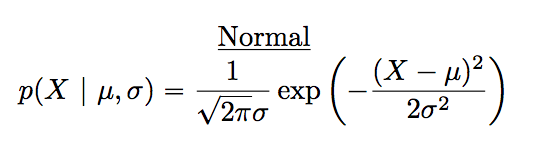

knitr::include_graphics("imgs/navarro_img/probability/frequentistProb-eps-converted-to.png")
I have studied many languages-French, Spanish and a little Italian, but no one told me that Statistics was a foreign language. —Charmaine J. Forde
Up to this point in the book, we’ve discussed some of the key ideas in experimental design, and we’ve talked a little about how you can summarize a data set. To a lot of people, this is all there is to statistics: it’s about calculating averages, collecting all the numbers, drawing pictures, and putting them all in a report somewhere. Kind of like stamp collecting, but with numbers. However, statistics covers much more than that. In fact, descriptive statistics is one of the smallest parts of statistics, and one of the least powerful. The bigger and more useful part of statistics is that it provides tools that let you make inferences about data.
Once you start thinking about statistics in these terms – that statistics is there to help us draw inferences from data – you start seeing examples of it everywhere. For instance, here’s a tiny extract from a newspaper article in the Sydney Morning Herald (30 Oct 2010):
“I have a tough job,” the Premier said in response to a poll which found her government is now the most unpopular Labor administration in polling history, with a primary vote of just 23 per cent.
This kind of remark is entirely unremarkable in the papers or in everyday life, but let’s have a think about what it entails. A polling company has conducted a survey, usually a pretty big one because they can afford it. I’m too lazy to track down the original survey, so let’s just imagine that they called 1000 voters at random, and 230 (23%) of those claimed that they intended to vote for the party. For the 2010 Federal election, the Australian Electoral Commission reported 4,610,795 enrolled voters in New South Whales; so the opinions of the remaining 4,609,795 voters (about 99.98% of voters) remain unknown to us. Even assuming that no-one lied to the polling company the only thing we can say with 100% confidence is that the true primary vote is somewhere between 230/4610795 (about 0.005%) and 4610025/4610795 (about 99.83%). So, on what basis is it legitimate for the polling company, the newspaper, and the readership to conclude that the ALP primary vote is only about 23%?
The answer to the question is pretty obvious: if I call 1000 people at random, and 230 of them say they intend to vote for the ALP, then it seems very unlikely that these are the only 230 people out of the entire voting public who actually intend to do so. In other words, we assume that the data collected by the polling company is pretty representative of the population at large. But how representative? Would we be surprised to discover that the true ALP primary vote is actually 24%? 29%? 37%? At this point everyday intuition starts to break down a bit. No-one would be surprised by 24%, and everybody would be surprised by 37%, but it’s a bit hard to say whether 29% is plausible. We need some more powerful tools than just looking at the numbers and guessing.
Inferential statistics provides the tools that we need to answer these sorts of questions, and since these kinds of questions lie at the heart of the scientific enterprise, they take up the lions share of every introductory course on statistics and research methods. However, our tools for making statistical inferences are 1) built on top of probability theory, and 2) require an understanding of how samples behave when you take them from distributions (defined by probability theory…). So, this chapter has two main parts. A brief introduction to probability theory, and an introduction to sampling from distributions.
Before we start talking about probability theory, it’s helpful to spend a moment thinking about the relationship between probability and statistics. The two disciplines are closely related but they’re not identical. Probability theory is “the doctrine of chances”. It’s a branch of mathematics that tells you how often different kinds of events will happen. For example, all of these questions are things you can answer using probability theory:
What are the chances of a fair coin coming up heads 10 times in a row?
If I roll two six sided dice, how likely is it that I’ll roll two sixes?
How likely is it that five cards drawn from a perfectly shuffled deck will all be hearts?
What are the chances that I’ll win the lottery?
Notice that all of these questions have something in common. In each case the “truth of the world” is known, and my question relates to the “what kind of events” will happen. In the first question I know that the coin is fair, so there’s a 50% chance that any individual coin flip will come up heads. In the second question, I know that the chance of rolling a 6 on a single die is 1 in 6. In the third question I know that the deck is shuffled properly. And in the fourth question, I know that the lottery follows specific rules. You get the idea. The critical point is that probabilistic questions start with a known model of the world, and we use that model to do some calculations.
The underlying model can be quite simple. For instance, in the coin flipping example, we can write down the model like this: \(P(\mbox{heads}) = 0.5\) which you can read as “the probability of heads is 0.5”.
As we’ll see later, in the same way that percentages are numbers that range from 0% to 100%, probabilities are just numbers that range from 0 to 1. When using this probability model to answer the first question, I don’t actually know exactly what’s going to happen. Maybe I’ll get 10 heads, like the question says. But maybe I’ll get three heads. That’s the key thing: in probability theory, the model is known, but the data are not.
So that’s probability. What about statistics? Statistical questions work the other way around. In statistics, we do not know the truth about the world. All we have is the data, and it is from the data that we want to learn the truth about the world. Statistical questions tend to look more like these:
If my friend flips a coin 10 times and gets 10 heads, are they playing a trick on me?
If five cards off the top of the deck are all hearts, how likely is it that the deck was shuffled?
If the lottery commissioner’s spouse wins the lottery, how likely is it that the lottery was rigged?
This time around, the only thing we have are data. What I know is that I saw my friend flip the coin 10 times and it came up heads every time. And what I want to infer is whether or not I should conclude that what I just saw was actually a fair coin being flipped 10 times in a row, or whether I should suspect that my friend is playing a trick on me. The data I have look like this:
H H H H H H H H H H Hand what I’m trying to do is work out which “model of the world” I should put my trust in. If the coin is fair, then the model I should adopt is one that says that the probability of heads is 0.5; that is, \(P(\mbox{heads}) = 0.5\). If the coin is not fair, then I should conclude that the probability of heads is not 0.5, which we would write as \(P(\mbox{heads}) \neq 0.5\). In other words, the statistical inference problem is to figure out which of these probability models is right. Clearly, the statistical question isn’t the same as the probability question, but they’re deeply connected to one another. Because of this, a good introduction to statistical theory will start with a discussion of what probability is and how it works.
Let’s start with the first of these questions. What is “probability”? It might seem surprising to you, but while statisticians and mathematicians (mostly) agree on what the rules of probability are, there’s much less of a consensus on what the word really means. It seems weird because we’re all very comfortable using words like “chance”, “likely”, “possible” and “probable”, and it doesn’t seem like it should be a very difficult question to answer. If you had to explain “probability” to a five year old, you could do a pretty good job. But if you’ve ever had that experience in real life, you might walk away from the conversation feeling like you didn’t quite get it right, and that (like many everyday concepts) it turns out that you don’t really know what it’s all about.
So I’ll have a go at it. Let’s suppose I want to bet on a soccer game between two teams of robots, Arduino Arsenal and C Milan. After thinking about it, I decide that there is an 80% probability that Arduino Arsenal winning. What do I mean by that? Here are three possibilities…
They’re robot teams, so I can make them play over and over again, and if I did that, Arduino Arsenal would win 8 out of every 10 games on average.
For any given game, I would only agree that betting on this game is only “fair” if a $1 bet on C Milan gives a $5 payoff (i.e. I get my $1 back plus a $4 reward for being correct), as would a $4 bet on Arduino Arsenal (i.e., my $4 bet plus a $1 reward).
My subjective “belief” or “confidence” in an Arduino Arsenal victory is four times as strong as my belief in a C Milan victory.
Each of these seems sensible. However they’re not identical, and not every statistician would endorse all of them. The reason is that there are different statistical ideologies (yes, really!) and depending on which one you subscribe to, you might say that some of those statements are meaningless or irrelevant. In this section, I give a brief introduction the two main approaches that exist in the literature. These are by no means the only approaches, but they’re the two big ones.
The first of the two major approaches to probability, and the more dominant one in statistics, is referred to as the frequentist view, and it defines probability as a long-run frequency. Suppose we were to try flipping a fair coin, over and over again. By definition, this is a coin that has \(P(H) = 0.5\). What might we observe? One possibility is that the first 20 flips might look like this:
T,H,H,H,H,T,T,H,H,H,H,T,H,H,T,T,T,T,T,HIn this case 11 of these 20 coin flips (55%) came up heads. Now suppose that I’d been keeping a running tally of the number of heads (which I’ll call \(N_H\)) that I’ve seen, across the first \(N\) flips, and calculate the proportion of heads \(N_H / N\) every time. Here’s what I’d get (I did literally flip coins to produce this!):
| number of flips | 1 | 2 | 3 | 4 | 5 | 6 | 7 | 8 | 9 | 10 |
| number of heads | 0 | 1 | 2 | 3 | 4 | 4 | 4 | 5 | 6 | 7 |
| proportion | .00 | .50 | .67 | .75 | .80 | .67 | .57 | .63 | .67 | .70 |
| number of flips | 11 | 12 | 13 | 14 | 15 | 16 | 17 | 18 | 19 | 20 |
| number of heads | 8 | 8 | 9 | 10 | 10 | 10 | 10 | 10 | 10 | 11 |
| proportion | .73 | .67 | .69 | .71 | .67 | .63 | .59 | .56 | .53 | .55 |
Notice that at the start of the sequence, the proportion of heads fluctuates wildly, starting at .00 and rising as high as .80. Later on, one gets the impression that it dampens out a bit, with more and more of the values actually being pretty close to the “right” answer of .50. This is the frequentist definition of probability in a nutshell: flip a fair coin over and over again, and as \(N\) grows large (approaches infinity, denoted \(N\rightarrow \infty\)), the proportion of heads will converge to 50%. There are some subtle technicalities that the mathematicians care about, but qualitatively speaking, that’s how the frequentists define probability. Unfortunately, I don’t have an infinite number of coins, or the infinite patience required to flip a coin an infinite number of times. However, I do have a computer, and computers excel at mindless repetitive tasks. So I asked my computer to simulate flipping a coin 1000 times, and then drew a picture of what happens to the proportion \(N_H / N\) as \(N\) increases. Actually, I did it four times, just to make sure it wasn’t a fluke. The results are shown in Figure 4.1. As you can see, the proportion of observed heads eventually stops fluctuating, and settles down; when it does, the number at which it finally settles is the true probability of heads.
knitr::include_graphics("imgs/navarro_img/probability/frequentistProb-eps-converted-to.png")The frequentist definition of probability has some desirable characteristics. First, it is objective: the probability of an event is necessarily grounded in the world. The only way that probability statements can make sense is if they refer to (a sequence of) events that occur in the physical universe. Second, it is unambiguous: any two people watching the same sequence of events unfold, trying to calculate the probability of an event, must inevitably come up with the same answer.
However, it also has undesirable characteristics. Infinite sequences don’t exist in the physical world. Suppose you picked up a coin from your pocket and started to flip it. Every time it lands, it impacts on the ground. Each impact wears the coin down a bit; eventually, the coin will be destroyed. So, one might ask whether it really makes sense to pretend that an “infinite” sequence of coin flips is even a meaningful concept, or an objective one. We can’t say that an “infinite sequence” of events is a real thing in the physical universe, because the physical universe doesn’t allow infinite anything.
More seriously, the frequentist definition has a narrow scope. There are lots of things out there that human beings are happy to assign probability to in everyday language, but cannot (even in theory) be mapped onto a hypothetical sequence of events. For instance, if a meteorologist comes on TV and says, “the probability of rain in Adelaide on 2 November 2048 is 60%” we humans are happy to accept this. But it’s not clear how to define this in frequentist terms. There’s only one city of Adelaide, and only 2 November 2048. There’s no infinite sequence of events here, just a once-off thing. Frequentist probability genuinely forbids us from making probability statements about a single event. From the frequentist perspective, it will either rain tomorrow or it will not; there is no “probability” that attaches to a single non-repeatable event. Now, it should be said that there are some very clever tricks that frequentists can use to get around this. One possibility is that what the meteorologist means is something like this: “There is a category of days for which I predict a 60% chance of rain; if we look only across those days for which I make this prediction, then on 60% of those days it will actually rain”. It’s very weird and counter intuitive to think of it this way, but you do see frequentists do this sometimes.
The Bayesian view of probability is often called the subjectivist view, and it is a minority view among statisticians, but one that has been steadily gaining traction for the last several decades. There are many flavors of Bayesianism, making hard to say exactly what “the” Bayesian view is. The most common way of thinking about subjective probability is to define the probability of an event as the degree of belief that an intelligent and rational agent assigns to that truth of that event. From that perspective, probabilities don’t exist in the world, but rather in the thoughts and assumptions of people and other intelligent beings. However, in order for this approach to work, we need some way of operationalising “degree of belief”. One way that you can do this is to formalize it in terms of “rational gambling”, though there are many other ways. Suppose that I believe that there’s a 60% probability of rain tomorrow. If someone offers me a bet: if it rains tomorrow, then I win $5, but if it doesn’t rain then I lose $5. Clearly, from my perspective, this is a pretty good bet. On the other hand, if I think that the probability of rain is only 40%, then it’s a bad bet to take. Thus, we can operationalize the notion of a “subjective probability” in terms of what bets I’m willing to accept.
What are the advantages and disadvantages to the Bayesian approach? The main advantage is that it allows you to assign probabilities to any event you want to. You don’t need to be limited to those events that are repeatable. The main disadvantage (to many people) is that we can’t be purely objective – specifying a probability requires us to specify an entity that has the relevant degree of belief. This entity might be a human, an alien, a robot, or even a statistician, but there has to be an intelligent agent out there that believes in things. To many people this is uncomfortable: it seems to make probability arbitrary. While the Bayesian approach does require that the agent in question be rational (i.e., obey the rules of probability), it does allow everyone to have their own beliefs; I can believe the coin is fair and you don’t have to, even though we’re both rational. The frequentist view doesn’t allow any two observers to attribute different probabilities to the same event: when that happens, then at least one of them must be wrong. The Bayesian view does not prevent this from occurring. Two observers with different background knowledge can legitimately hold different beliefs about the same event. In short, where the frequentist view is sometimes considered to be too narrow (forbids lots of things that that we want to assign probabilities to), the Bayesian view is sometimes thought to be too broad (allows too many differences between observers).
Now that you’ve seen each of these two views independently, it’s useful to make sure you can compare the two. Go back to the hypothetical robot soccer game at the start of the section. What do you think a frequentist and a Bayesian would say about these three statements? Which statement would a frequentist say is the correct definition of probability? Which one would a Bayesian do? Would some of these statements be meaningless to a frequentist or a Bayesian? If you’ve understood the two perspectives, you should have some sense of how to answer those questions.
Okay, assuming you understand the different, you might be wondering which of them is right? Honestly, I don’t know that there is a right answer. As far as I can tell there’s nothing mathematically incorrect about the way frequentists think about sequences of events, and there’s nothing mathematically incorrect about the way that Bayesians define the beliefs of a rational agent. In fact, when you dig down into the details, Bayesians and frequentists actually agree about a lot of things. Many frequentist methods lead to decisions that Bayesians agree a rational agent would make. Many Bayesian methods have very good frequentist properties.
For the most part, I’m a pragmatist so I’ll use any statistical method that I trust. As it turns out, that makes me prefer Bayesian methods, for reasons I’ll explain towards the end of the book, but I’m not fundamentally opposed to frequentist methods. Not everyone is quite so relaxed. For instance, consider Sir Ronald Fisher, one of the towering figures of 20th century statistics and a vehement opponent to all things Bayesian, whose paper on the mathematical foundations of statistics referred to Bayesian probability as “an impenetrable jungle [that] arrests progress towards precision of statistical concepts” Fisher (1922, 311). Or the psychologist Paul Meehl, who suggests that relying on frequentist methods could turn you into “a potent but sterile intellectual rake who leaves in his merry path a long train of ravished maidens but no viable scientific offspring” Meehl (1967, 114). The history of statistics, as you might gather, is not devoid of entertainment.
Ideological arguments between Bayesians and frequentists notwithstanding, it turns out that people mostly agree on the rules that probabilities should obey. There are lots of different ways of arriving at these rules. The most commonly used approach is based on the work of Andrey Kolmogorov, one of the great Soviet mathematicians of the 20th century. I won’t go into a lot of detail, but I’ll try to give you a bit of a sense of how it works. And in order to do so, I’m going to have to talk about my pants.
One of the disturbing truths about my life is that I only own 5 pairs of pants: three pairs of jeans, the bottom half of a suit, and a pair of tracksuit pants. Even sadder, I’ve given them names: I call them \(X_1\), \(X_2\), \(X_3\), \(X_4\) and \(X_5\). I really do: that’s why they call me Mister Imaginative. Now, on any given day, I pick out exactly one of pair of pants to wear. Not even I’m so stupid as to try to wear two pairs of pants, and thanks to years of training I never go outside without wearing pants anymore. If I were to describe this situation using the language of probability theory, I would refer to each pair of pants (i.e., each \(X\)) as an elementary event. The key characteristic of elementary events is that every time we make an observation (e.g., every time I put on a pair of pants), then the outcome will be one and only one of these events. Like I said, these days I always wear exactly one pair of pants, so my pants satisfy this constraint. Similarly, the set of all possible events is called a sample space. Granted, some people would call it a “wardrobe”, but that’s because they’re refusing to think about my pants in probabilistic terms. Sad.
Okay, now that we have a sample space (a wardrobe), which is built from lots of possible elementary events (pants), what we want to do is assign a probability of one of these elementary events. For an event \(X\), the probability of that event \(P(X)\) is a number that lies between 0 and 1. The bigger the value of \(P(X)\), the more likely the event is to occur. So, for example, if \(P(X) = 0\), it means the event \(X\) is impossible (i.e., I never wear those pants). On the other hand, if \(P(X) = 1\) it means that event \(X\) is certain to occur (i.e., I always wear those pants). For probability values in the middle, it means that I sometimes wear those pants. For instance, if \(P(X) = 0.5\) it means that I wear those pants half of the time.
At this point, we’re almost done. The last thing we need to recognize is that “something always happens”. Every time I put on pants, I really do end up wearing pants (crazy, right?). What this somewhat trite statement means, in probabilistic terms, is that the probabilities of the elementary events need to add up to 1. This is known as the law of total probability, not that any of us really care. More importantly, if these requirements are satisfied, then what we have is a probability distribution. For example, this is an example of a probability distribution
| Which pants? | Label | Probability |
|---|---|---|
| Blue jeans | \(X_1\) | \(P(X_1) = .5\) |
| Grey jeans | \(X_2\) | \(P(X_2) = .3\) |
| Black jeans | \(X_3\) | \(P(X_3) = .1\) |
| Black suit | \(X_4\) | \(P(X_4) = 0\) |
| Blue tracksuit | \(X_5\) | \(P(X_5) = .1\) |
Each of the events has a probability that lies between 0 and 1, and if we add up the probability of all events, they sum to 1. Awesome. We can even draw a nice bar graph to visualize this distribution, as shown in Figure 4.2. And at this point, we’ve all achieved something. You’ve learned what a probability distribution is, and I’ve finally managed to find a way to create a graph that focuses entirely on my pants. Everyone wins!
knitr::include_graphics("imgs/navarro_img/probability/pantsDistribution-eps-converted-to.png")The only other thing that I need to point out is that probability theory allows you to talk about non elementary events as well as elementary ones. The easiest way to illustrate the concept is with an example. In the pants example, it’s perfectly legitimate to refer to the probability that I wear jeans. In this scenario, the “Dan wears jeans” event said to have happened as long as the elementary event that actually did occur is one of the appropriate ones; in this case “blue jeans”, “black jeans” or “grey jeans”. In mathematical terms, we defined the “jeans” event \(E\) to correspond to the set of elementary events \((X_1, X_2, X_3)\). If any of these elementary events occurs, then \(E\) is also said to have occurred. Having decided to write down the definition of the \(E\) this way, it’s pretty straightforward to state what the probability \(P(E)\) is: we just add everything up. In this particular case \[P(E) = P(X_1) + P(X_2) + P(X_3)\] and, since the probabilities of blue, grey and black jeans respectively are .5, .3 and .1, the probability that I wear jeans is equal to .9.
At this point you might be thinking that this is all terribly obvious and simple and you’d be right. All we’ve really done is wrap some basic mathematics around a few common sense intuitions. However, from these simple beginnings it’s possible to construct some extremely powerful mathematical tools. I’m definitely not going to go into the details in this book, but what I will do is list some of the other rules that probabilities satisfy. These rules can be derived from the simple assumptions that I’ve outlined above, but since we don’t actually use these rules for anything in this book, I won’t do so here.
| English | Notation | Formula | |
|---|---|---|---|
| not \(A\) | \(P(\neg A)\) | \(=\) | \(1-P(A)\) |
| \(A\) or \(B\) | \(P(A \cup B)\) | \(=\) | \(P(A) + P(B) - P(A \cap B)\) |
| \(A\) and \(B\) | \(P(A \cap B)\) | \(=\) | \(P(A|B) P(B)\) |
Now that we have the ability to “define” non-elementary events in terms of elementary ones, we can actually use this to construct (or, if you want to be all mathematicallish, “derive”) some of the other rules of probability. These rules are listed above, and while I’m pretty confident that very few of my readers actually care about how these rules are constructed, I’m going to show you anyway: even though it’s boring and you’ll probably never have a lot of use for these derivations, if you read through it once or twice and try to see how it works, you’ll find that probability starts to feel a bit less mysterious, and with any luck a lot less daunting. So here goes. Firstly, in order to construct the rules I’m going to need a sample space \(X\) that consists of a bunch of elementary events \(x\), and two non-elementary events, which I’ll call \(A\) and \(B\). Let’s say: \[\begin{array}{rcl} X &=& (x_1, x_2, x_3, x_4, x_5) \\ A &=& (x_1, x_2, x_3) \\ B &=& (x_3, x_4) \end{array}\] To make this a bit more concrete, let’s suppose that we’re still talking about the pants distribution. If so, \(A\) corresponds to the event “jeans”, and \(B\) corresponds to the event “black”: \[\begin{array}{rcl} \mbox{``jeans''} &=& (\mbox{``blue jeans''}, \mbox{``grey jeans''}, \mbox{``black jeans''}) \\ \mbox{``black''} &=& (\mbox{``black jeans''}, \mbox{``black suit''}) \end{array}\] So now let’s start checking the rules that I’ve listed in the table.
In the first line, the table says that \[P(\neg A) = 1- P(A)\] and what it means is that the probability of “not \(A\)” is equal to 1 minus the probability of \(A\). A moment’s thought (and a tedious example) make it obvious why this must be true. If \(A\) corresponds to the even that I wear jeans (i.e., one of \(x_1\) or \(x_2\) or \(x_3\) happens), then the only meaningful definition of “not \(A\)” (which is mathematically denoted as \(\neg A\)) is to say that \(\neg A\) consists of all elementary events that don’t belong to \(A\). In the case of the pants distribution it means that \(\neg A = (x_4, x_5)\), or, to say it in English: “not jeans” consists of all pairs of pants that aren’t jeans (i.e., the black suit and the blue tracksuit). Consequently, every single elementary event belongs to either \(A\) or \(\neg A\), but not both. Okay, so now let’s rearrange our statement above: \[P(\neg A) + P(A) = 1\] which is a trite way of saying either I do wear jeans or I don’t wear jeans: the probability of “not jeans” plus the probability of “jeans” is 1. Mathematically: \[\begin{array}{rcl} P(\neg A) &=& P(x_4) + P(x_5) \\ P(A) &=& P(x_1) + P(x_2) + P(x_3) \end{array}\] so therefore \[\begin{array}{rcl} P(\neg A) + P(A) &=& P(x_1) + P(x_2) + P(x_3) + P(x_4) + P(x_5) \\ &=& \sum_{x \in X} P(x) \\ &=& 1 \end{array}\] Excellent. It all seems to work.
Wow, I can hear you saying. That’s a lot of \(x\)s to tell me the freaking obvious. And you’re right: this is freaking obvious. The whole point of probability theory to to formalize and mathematize a few very basic common sense intuitions. So let’s carry this line of thought forward a bit further. In the last section I defined an event corresponding to not A, which I denoted \(\neg A\). Let’s now define two new events that correspond to important everyday concepts: \(A\) and \(B\), and \(A\) or \(B\). To be precise:
| English statement: | Mathematical notation: |
|---|---|
| “\(A\) and \(B\)” both happen | \(A \cap B\) |
| at least one of “\(A\) or \(B\)” happens | \(A \cup B\) |
Since \(A\) and \(B\) are both defined in terms of our elementary events (the \(x\)s) we’re going to need to try to describe \(A \cap B\) and \(A \cup B\) in terms of our elementary events too. Can we do this? Yes we can The only way that both \(A\) and \(B\) can occur is if the elementary event that we observe turns out to belong to both \(A\) and \(B\). Thus “\(A \cap B\)” includes only those elementary events that belong to both \(A\) and \(B\)… \[\begin{array}{rcl} A &=& (x_1, x_2, x_3) \\ B &=& (x_3, x_4) \\ A \cap B & = & (x_3) \end{array}\] So, um, the only way that I can wear “jeans” \((x_1, x_2, x_3)\) and “black pants” \((x_3, x_4)\) is if I wear “black jeans” \((x_3)\). Another victory for the bloody obvious.
At this point, you’re not going to be at all shocked by the definition of \(A \cup B\), though you’re probably going to be extremely bored by it. The only way that I can wear “jeans” or “black pants” is if the elementary pants that I actually do wear belongs to \(A\) or to \(B\), or to both. So… \[\begin{array}{rcl} A &=& (x_1, x_2, x_3) \\ B &=& (x_3, x_4) \\ A \cup B & = & (x_1, x_2, x_3, x_4) \end{array}\] Oh yeah baby. Mathematics at its finest.
So, we’ve defined what we mean by \(A \cap B\) and \(A \cup B\). Now let’s assign probabilities to these events. More specifically, let’s start by verifying the rule that claims that: \[P(A \cup B) = P(A) + P(B) - P(A \cap B)\] Using our definitions earlier, we know that \(A \cup B = (x_1, x_2, x_3, x_4)\), so \[P(A \cup B) = P(x_1) + P(x_2) + P(x_3) + P(x_4)\] and making similar use of the fact that we know what elementary events belong to \(A\), \(B\) and \(A \cap B\)…. \[\begin{array}{rcl} P(A) &=& P(x_1) + P(x_2) + P(x_3) \\ P(B) &=& P(x_3) + P(x_4) \\ P(A \cap B) &=& P(x_3) \end{array}\] and therefore \[\begin{array}{rcl} P(A) + P(B) - P(A \cap B) &=& P(x_1) + P(x_2) + P(x_3) + P(x_3) + P(x_4) - P(x_3) \\ &=& P(x_1) + P(x_2) + P(x_3) + P(x_4) \\ &=& P(A \cup B) \end{array}\] Done.
The next concept we need to define is the notion of “\(B\) given \(A\)”, which is typically written \(B | A\). Here’s what I mean: suppose that I get up one morning, and put on a pair of pants. An elementary event \(x\) has occurred. Suppose further I yell out to my wife (who is in the other room, and so cannot see my pants) “I’m wearing jeans today!”. Assuming that she believes that I’m telling the truth, she knows that \(A\) is true. Given that she knows that \(A\) has happened, what is the conditional probability that \(B\) is also true? Well, let’s think about what she knows. Here are the facts:
The non-jeans events are impossible. If \(A\) is true, then we know that the only possible elementary events that could have occurred are \(x_1\), \(x_2\) and \(x_3\) (i.e.,the jeans). The non-jeans events \(x_4\) and \(x_5\) are now impossible, and must be assigned probability zero. In other words, our sample space has been restricted to the jeans events. But it’s still the case that the probabilities of these these events must sum to 1: we know for sure that I’m wearing jeans.
She’s learned nothing about which jeans I’m wearing. Before I made my announcement that I was wearing jeans, she already knew that I was five times as likely to be wearing blue jeans (\(P(x_1) = 0.5\)) than to be wearing black jeans (\(P(x_3) = 0.1\)). My announcement doesn’t change this… I said nothing about what color my jeans were, so it must remain the case that \(P(x_1) / P(x_3)\) stays the same, at a value of 5.
There’s only one way to satisfy these constraints: set the impossible events to have zero probability (i.e., \(P(x | A) = 0\) if \(x\) is not in \(A\)), and then divide the probabilities of all the others by \(P(A)\). In this case, since \(P(A) = 0.9\), we divide by 0.9. This gives:
| which pants? | elementary event | old prob, \(P(x)\) | new prob, \(P(x | A)\) |
|---|---|---|---|
| blue jeans | \(x_1\) | 0.5 | 0.556 |
| grey jeans | \(x_2\) | 0.3 | 0.333 |
| black jeans | \(x_3\) | 0.1 | 0.111 |
| black suit | \(x_4\) | 0 | 0 |
| blue tracksuit | \(x_5\) | 0.1 | 0 |
In mathematical terms, we say that \[P(x | A) = \frac{P(x)}{P(A)}\] if \(x \in A\), and \(P(x|A) = 0\) otherwise. And therefore… \[\begin{array}{rcl} P(B | A) &=& P(x_3 | A) + P(x_4 | A) \\ \\ &=& \displaystyle\frac{P(x_3)}{P(A)} + 0 \\ \\ &=& \displaystyle\frac{P(x_3)}{P(A)} \end{array}\] Now, recalling that \(A \cap B = (x_3)\), we can write this as \[P(B | A) = \frac{P(A \cap B)}{P(A)}\] and if we multiply both sides by \(P(A)\) we obtain: \[P(A \cap B) = P(B| A) P(A)\] which is the third rule that we had listed in the table.
As you might imagine, probability distributions vary enormously, and there’s an enormous range of distributions out there. However, they aren’t all equally important. In fact, the vast majority of the content in this book relies on one of five distributions: the binomial distribution, the normal distribution, the \(t\) distribution, the \(\chi^2\) (“chi-square”) distribution and the \(F\) distribution. Given this, what I’ll do over the next few sections is provide a brief introduction to all five of these, paying special attention to the binomial and the normal. I’ll start with the binomial distribution, since it’s the simplest of the five.
The theory of probability originated in the attempt to describe how games of chance work, so it seems fitting that our discussion of the binomial distribution should involve a discussion of rolling dice and flipping coins. Let’s imagine a simple “experiment”: in my hot little hand I’m holding 20 identical six-sided dice. On one face of each die there’s a picture of a skull; the other five faces are all blank. If I proceed to roll all 20 dice, what’s the probability that I’ll get exactly 4 skulls? Assuming that the dice are fair, we know that the chance of any one die coming up skulls is 1 in 6; to say this another way, the skull probability for a single die is approximately \(.167\). This is enough information to answer our question, so let’s have a look at how it’s done.
As usual, we’ll want to introduce some names and some notation. We’ll let \(N\) denote the number of dice rolls in our experiment; which is often referred to as the size parameter of our binomial distribution. We’ll also use \(\theta\) to refer to the the probability that a single die comes up skulls, a quantity that is usually called the success probability of the binomial. Finally, we’ll use \(X\) to refer to the results of our experiment, namely the number of skulls I get when I roll the dice. Since the actual value of \(X\) is due to chance, we refer to it as a random variable. In any case, now that we have all this terminology and notation, we can use it to state the problem a little more precisely. The quantity that we want to calculate is the probability that \(X = 4\) given that we know that \(\theta = .167\) and \(N=20\). The general “form” of the thing I’m interested in calculating could be written as \[P(X \ | \ \theta, N)\] and we’re interested in the special case where \(X=4\), \(\theta = .167\) and \(N=20\). There’s only one more piece of notation I want to refer to before moving on to discuss the solution to the problem. If I want to say that \(X\) is generated randomly from a binomial distribution with parameters \(\theta\) and \(N\), the notation I would use is as follows: \[X \sim \mbox{Binomial}(\theta, N)\]
Yeah, yeah. I know what you’re thinking: notation, notation, notation. Really, who cares? Very few readers of this book are here for the notation, so I should probably move on and talk about how to use the binomial distribution. To that end, Figure Figure 4.3 plots the binomial probabilities for all possible values of \(X\) for our dice rolling experiment, from \(X=0\) (no skulls) all the way up to \(X=20\) (all skulls). Note that this is basically a bar chart, and is no different to the “pants probability” plot I drew in Figure 4.2. On the horizontal axis we have all the possible events, and on the vertical axis we can read off the probability of each of those events. So, the probability of rolling 4 skulls out of 20 times is about 0.20 (the actual answer is 0.2022036, as we’ll see in a moment). In other words, you’d expect that to happen about 20% of the times you repeated this experiment.
knitr::include_graphics("imgs/navarro_img/probability/binomSkulls20-eps-converted-to.png")
R has a function called dbinom that calculates binomial probabilities for us. The main arguments to the function are
x This is a number, or vector of numbers, specifying the outcomes whose probability you’re trying to calculate.
size This is a number telling R the size of the experiment.
prob This is the success probability for any one trial in the experiment.
So, in order to calculate the probability of getting skulls, from an experiment of trials, in which the probability of getting a skull on any one trial is … well, the command I would use is simply this:
dbinom( x = 4, size = 20, prob = 1/6 )[1] 0.2022036To give you a feel for how the binomial distribution changes when we alter the values of \(\theta\) and \(N\), let’s suppose that instead of rolling dice, I’m actually flipping coins. This time around, my experiment involves flipping a fair coin repeatedly, and the outcome that I’m interested in is the number of heads that I observe. In this scenario, the success probability is now \(\theta = 1/2\). Suppose I were to flip the coin \(N=20\) times. In this example, I’ve changed the success probability, but kept the size of the experiment the same. What does this do to our binomial distribution?
knitr::include_graphics("imgs/navarro_img/probability/Binomial2.png")
Well, as Figure 4.4 \(a\) shows, the main effect of this is to shift the whole distribution, as you’d expect. Okay, what if we flipped a coin \(N=100\) times? Well, in that case, we get Figure 4.4 \(b\). The distribution stays roughly in the middle, but there’s a bit more variability in the possible outcomes.
At this point, I should probably explain the name of the dbinom function. Obviously, the “binom” part comes from the fact that we’re working with the binomial distribution, but the “d” prefix is probably a bit of a mystery. In this section I’ll give a partial explanation: specifically, I’ll explain why there is a prefix. As for why it’s a “d” specifically, you’ll have to wait until the next section. What’s going on here is that R actually provides four functions in relation to the binomial distribution. These four functions are dbinom, pbinom, rbinom and qbinom, and each one calculates a different quantity of interest. Not only that, R does the same thing for every probability distribution that it implements. No matter what distribution you’re talking about, there’s a d function, a p function, r a function and a q function.
Let’s have a look at what all four functions do. Firstly, all four versions of the function require you to specify the size and prob arguments: no matter what you’re trying to get R to calculate, it needs to know what the parameters are. However, they differ in terms of what the other argument is, and what the output is. So let’s look at them one at a time.
The d form we’ve already seen: you specify a particular outcome x, and the output is the probability of obtaining exactly that outcome. (the “d” is short for density, but ignore that for now).
The p form calculates the cumulative probability. You specify a particular quantile q , and it tells you the probability of obtaining an outcome smaller than or equal to q.
The q form calculates the quantiles of the distribution. You specify a probability value p, and it gives you the corresponding percentile. That is, the value of the variable for which there’s a probability p of obtaining an outcome lower than that value.
The r form is a random number generator: specifically, it generates n random outcomes from the distribution.
This is a little abstract, so let’s look at some concrete examples. Again, we’ve already covered dbinom so let’s focus on the other three versions. We’ll start with pbinom, and we’ll go back to the skull-dice example. Again, I’m rolling 20 dice, and each die has a 1 in 6 chance of coming up skulls. Suppose, however, that I want to know the probability of rolling 4 or fewer skulls. If I wanted to, I could use the dbinom function to calculate the exact probability of rolling 0 skulls, 1 skull, 2 skulls, 3 skulls and 4 skulls and then add these up, but there’s a faster way. Instead, I can calculate this using the pbinom function. Here’s the command:
pbinom( q= 4, size = 20, prob = 1/6)[1] 0.7687492In other words, there is a 76.9% chance that I will roll 4 or fewer skulls. Or, to put it another way, R is telling us that a value of 4 is actually the 76.9th percentile of this binomial distribution.
Next, let’s consider the qbinom function. Let’s say I want to calculate the 75th percentile of the binomial distribution. If we’re sticking with our skulls example, I would use the following command to do this:
qbinom( p = 0.75, size = 20, prob = 1/6 )[1] 4Hm. There’s something odd going on here. Let’s think this through. What the qbinom function appears to be telling us is that the 75th percentile of the binomial distribution is 4, even though we saw from the function that 4 is actually the 76.9th percentile. And it’s definitely the pbinom function that is correct. I promise. The weirdness here comes from the fact that our binomial distribution doesn’t really have a 75th percentile. Not really. Why not? Well, there’s a 56.7% chance of rolling 3 or fewer skulls (you can type pbinom(3, 20, 1/6) to confirm this if you want), and a 76.9% chance of rolling 4 or fewer skulls. So there’s a sense in which the 75th percentile should lie “in between” 3 and 4 skulls. But that makes no sense at all! You can’t roll 20 dice and get 3.9 of them come up skulls. This issue can be handled in different ways: you could report an in between value (or interpolated value, to use the technical name) like 3.9, you could round down (to 3) or you could round up (to 4).
The qbinom function rounds upwards: if you ask for a percentile that doesn’t actually exist (like the 75th in this example), R finds the smallest value for which the the percentile rank is at least what you asked for. In this case, since the “true” 75th percentile (whatever that would mean) lies somewhere between 3 and 4 skulls, R Rounds up and gives you an answer of 4. This subtlety is tedious, I admit, but thankfully it’s only an issue for discrete distributions like the binomial. The other distributions that I’ll talk about (normal, \(t\), \(\chi^2\) and \(F\)) are all continuous, and so R can always return an exact quantile whenever you ask for it.
Finally, we have the random number generator. To use the rbinom function, you specify how many times R should “simulate” the experiment using the n argument, and it will generate random outcomes from the binomial distribution. So, for instance, suppose I were to repeat my die rolling experiment 100 times. I could get R to simulate the results of these experiments by using the following command:
rbinom( n = 100, size = 20, prob = 1/6 ) [1] 0 1 2 4 3 5 8 3 3 3 3 4 3 4 1 1 4 2 1 3 6 3 3 4 3 2 3 3 0 4 2 4 3 8 4 3 2
[38] 1 5 5 2 2 9 4 3 9 0 6 5 5 7 6 3 2 5 5 4 5 5 5 2 3 6 4 2 3 5 3 7 4 3 4 5 4
[75] 5 3 1 4 3 1 4 4 5 2 6 4 1 3 4 3 1 6 3 9 2 2 2 2 6 5As you can see, these numbers are pretty much what you’d expect given the distribution shown in Figure 4.3 . Most of the time I roll somewhere between 1 to 5 skulls. There are a lot of subtleties associated with random number generation using a computer, but for the purposes of this book we don’t need to worry too much about them.
While the binomial distribution is conceptually the simplest distribution to understand, it’s not the most important one. That particular honor goes to the normal distribution, which is also referred to as “the bell curve” or a “Gaussian distribution”.
knitr::include_graphics("imgs/navarro_img/probability/standardNormal-eps-converted-to.png")A normal distribution is described using two parameters, the mean of the distribution \(\mu\) and the standard deviation of the distribution \(\sigma\). The notation that we sometimes use to say that a variable \(X\) is normally distributed is as follows: \[X \sim \mbox{Normal}(\mu,\sigma)\] Of course, that’s just notation. It doesn’t tell us anything interesting about the normal distribution itself. The mathematical formula for the normal distribution is:
knitr::include_graphics("imgs/navarro_img/probability/Normal_formula.png")
The formula is important enough that everyone who learns statistics should at least look at it, but since this is an introductory text I don’t want to focus on it to much. Instead, we look at how R can be used to work with normal distributions. The R functions for the normal distribution are dnorm(), pnorm(), qnorm() and rnorm(). However, they behave in pretty much exactly the same way as the corresponding functions for the binomial distribution, so there’s not a lot that you need to know. The only thing that I should point out is that the argument names for the parameters are mean and sd. In pretty much every other respect, there’s nothing else to add.
Instead of focusing on the maths, let’s try to get a sense for what it means for a variable to be normally distributed. To that end, have a look at Figure 4.5, which plots a normal distribution with mean \(\mu = 0\) and standard deviation \(\sigma = 1\). You can see where the name “bell curve” comes from: it looks a bit like a bell. Notice that, unlike the plots that I drew to illustrate the binomial distribution, the picture of the normal distribution in Figure Figure 4.5 shows a smooth curve instead of “histogram-like” bars. This isn’t an arbitrary choice: the normal distribution is continuous, whereas the binomial is discrete. For instance, in the die rolling example from the last section, it was possible to get 3 skulls or 4 skulls, but impossible to get 3.9 skulls.
With this in mind, let’s see if we can get an intuition for how the normal distribution works. First, let’s have a look at what happens when we play around with the parameters of the distribution. One parameter we can change is the mean. This will shift the distribution to the right or left. The animation in Figure 4.6 shows a normal distribution with mean = 0, moving up and down from mean = 0 to mean = 5. Note, when you change the mean the whole shape of the distribution does not change, it just shifts from left to right. In the animation the normal distribution bounces up and down a little, but that’s just a quirk of the animation (plus it looks fun that way).
knitr::include_graphics(path="imgs/gifs/normalMovingMean-1.gif")
In contrast, if we increase the standard deviation while keeping the mean constant, the peak of the distribution stays in the same place, but the distribution gets wider. The animation in Figure 4.7 shows what happens when you start with a small standard deviation (sd = 0.5), and move to larger and larger standard deviation (up to sd = 5). As you can see, the distribution spreads out and becomes wider as the standard deviation increases.
knitr::include_graphics(path="imgs/gifs/normalMovingSD-1.gif")
Notice that when we widen the distribution the height of the peak shrinks. This has to happen: in the same way that the heights of the bars that we used to draw a discrete binomial distribution have to sum to 1, the total area under the curve for the normal distribution must equal 1. Before moving on, I want to point out one important characteristic of the normal distribution. Irrespective of what the actual mean and standard deviation are, 68.3% of the area falls within 1 standard deviation of the mean. Similarly, 95.4% of the distribution falls within 2 standard deviations of the mean, and 99.7% of the distribution is within 3 standard deviations.
There’s something I’ve been trying to hide throughout my discussion of the normal distribution, something that some introductory textbooks omit completely. They might be right to do so: this “thing” that I’m hiding is weird and counter intuitive even by the admittedly distorted standards that apply in statistics. Fortunately, it’s not something that you need to understand at a deep level in order to do basic statistics: rather, it’s something that starts to become important later on when you move beyond the basics. So, if it doesn’t make complete sense, don’t worry: try to make sure that you follow the gist of it.
Throughout my discussion of the normal distribution, there’s been one or two things that don’t quite make sense. Perhaps you noticed that the \(y\)-axis in these figures is labelled “Probability Density” rather than density. Maybe you noticed that I used \(p(X)\) instead of \(P(X)\) when giving the formula for the normal distribution. Maybe you’re wondering why R uses the “d” prefix for functions like dnorm(). And maybe, just maybe, you’ve been playing around with the dnorm() function, and you accidentally typed in a command like this:
dnorm( x = 1, mean = 1, sd = 0.1 )[1] 3.989423And if you’ve done the last part, you’re probably very confused. I’ve asked R to calculate the probability that x = 1, for a normally distributed variable with mean = 1 and standard deviation sd = 0.1; and it tells me that the probability is 3.99. But, as we discussed earlier, probabilities can’t be larger than 1. So either I’ve made a mistake, or that’s not a probability.
As it turns out, the second answer is correct. What we’ve calculated here isn’t actually a probability: it’s something else. To understand what that something is, you have to spend a little time thinking about what it really means to say that \(X\) is a continuous variable. Let’s say we’re talking about the temperature outside. The thermometer tells me it’s 23 degrees, but I know that’s not really true. It’s not exactly 23 degrees. Maybe it’s 23.1 degrees, I think to myself. But I know that that’s not really true either, because it might actually be 23.09 degrees. But, I know that… well, you get the idea. The tricky thing with genuinely continuous quantities is that you never really know exactly what they are.
Now think about what this implies when we talk about probabilities. Suppose that tomorrow’s maximum temperature is sampled from a normal distribution with mean 23 and standard deviation 1. What’s the probability that the temperature will be exactly 23 degrees? The answer is “zero”, or possibly, “a number so close to zero that it might as well be zero”. Why is this?
It’s like trying to throw a dart at an infinitely small dart board: no matter how good your aim, you’ll never hit it. In real life you’ll never get a value of exactly 23. It’ll always be something like 23.1 or 22.99998 or something. In other words, it’s completely meaningless to talk about the probability that the temperature is exactly 23 degrees. However, in everyday language, if I told you that it was 23 degrees outside and it turned out to be 22.9998 degrees, you probably wouldn’t call me a liar. Because in everyday language, “23 degrees” usually means something like “somewhere between 22.5 and 23.5 degrees”. And while it doesn’t feel very meaningful to ask about the probability that the temperature is exactly 23 degrees, it does seem sensible to ask about the probability that the temperature lies between 22.5 and 23.5, or between 20 and 30, or any other range of temperatures.
The point of this discussion is to make clear that, when we’re talking about continuous distributions, it’s not meaningful to talk about the probability of a specific value. However, what we can talk about is the probability that the value lies within a particular range of values. To find out the probability associated with a particular range, what you need to do is calculate the “area under the curve”.
Okay, so that explains part of the story. I’ve explained a little bit about how continuous probability distributions should be interpreted (i.e., area under the curve is the key thing), but I haven’t actually explained what the dnorm() function actually calculates. Equivalently, what does the formula for \(p(x)\) that I described earlier actually mean? Obviously, \(p(x)\) doesn’t describe a probability, but what is it? The name for this quantity \(p(x)\) is a probability density, and in terms of the plots we’ve been drawing, it corresponds to the height of the curve. The densities themselves aren’t meaningful in and of themselves: but they’re “rigged” to ensure that the area under the curve is always interpretable as genuine probabilities. To be honest, that’s about as much as you really need to know for now.
There are many other useful distributions, these include the t distribution, the F distribution, and the chi squared distribution. We will soon discover more about the t and F distributions when we discuss t-tests and ANOVAs in later chapters.
We’ve talked what probability means, and why statisticians can’t agree on what it means. We talked about the rules that probabilities have to obey. And we introduced the idea of a probability distribution, and spent a good chunk talking about some of the more important probability distributions that statisticians work with. We talked about things like this:
Probability theory versus statistics
Frequentist versus Bayesian views of probability
Basics of probability theory
Binomial distribution, normal distribution
As you’d expect, this coverage is by no means exhaustive. Probability theory is a large branch of mathematics in its own right, entirely separate from its application to statistics and data analysis. As such, there are thousands of books written on the subject and universities generally offer multiple classes devoted entirely to probability theory. Even the “simpler” task of documenting standard probability distributions is a big topic.Fortunately for you, very little of this is necessary. You’re unlikely to need to know dozens of statistical distributions when you go out and do real world data analysis, and you definitely won’t need them for this book, but it never hurts to know that there’s other possibilities out there.
Picking up on that last point, there’s a sense in which this whole chapter is something of a digression. Many undergraduate psychology classes on statistics skim over this content very quickly (I know mine did), and even the more advanced classes will often “forget” to revisit the basic foundations of the field. Most academic psychologists would not know the difference between probability and density, and until recently very few would have been aware of the difference between Bayesian and frequentist probability. However, I think it’s important to understand these things before moving onto the applications. For example, there are a lot of rules about what you’re “allowed” to say when doing statistical inference, and many of these can seem arbitrary and weird. However, they start to make sense if you understand that there is this Bayesian/frequentist distinction.
Remember, the role of descriptive statistics is to concisely summarize what we do know. In contrast, the purpose of inferential statistics is to “learn what we do not know from what we do”. What kinds of things would we like to learn about? And how do we learn them? These are the questions that lie at the heart of inferential statistics, and they are traditionally divided into two “big ideas”: estimation and hypothesis testing. The goal in this chapter is to introduce the first of these big ideas, estimation theory, but we’ll talk about sampling theory first because estimation theory doesn’t make sense until you understand sampling. So, this chapter divides into sampling theory, and how to make use of sampling theory to discuss how statisticians think about estimation. We have already done lots of sampling, so you are already familiar with some of the big ideas.
Sampling theory plays a huge role in specifying the assumptions upon which your statistical inferences rely. And in order to talk about “making inferences” the way statisticians think about it, we need to be a bit more explicit about what it is that we’re drawing inferences from (the sample) and what it is that we’re drawing inferences about (the population).
In almost every situation of interest, what we have available to us as researchers is a sample of data. We might have run experiment with some number of participants; a polling company might have phoned some number of people to ask questions about voting intentions; etc. Regardless: the data set available to us is finite, and incomplete. We can’t possibly get every person in the world to do our experiment; a polling company doesn’t have the time or the money to ring up every voter in the country etc. In our earlier discussion of descriptive statistics, this sample was the only thing we were interested in. Our only goal was to find ways of describing, summarizing and graphing that sample. This is about to change.
A sample is a concrete thing. You can open up a data file, and there’s the data from your sample. A population, on the other hand, is a more abstract idea. It refers to the set of all possible people, or all possible observations, that you want to draw conclusions about, and is generally much bigger than the sample. In an ideal world, the researcher would begin the study with a clear idea of what the population of interest is, since the process of designing a study and testing hypotheses about the data that it produces does depend on the population about which you want to make statements. However, that doesn’t always happen in practice: usually the researcher has a fairly vague idea of what the population is and designs the study as best he/she can on that basis.
Sometimes it’s easy to state the population of interest. For instance, in the “polling company” example, the population consisted of all voters enrolled at the a time of the study – millions of people. The sample was a set of 1000 people who all belong to that population. In most situations the situation is much less simple. In a typical a psychological experiment, determining the population of interest is a bit more complicated. Suppose I run an experiment using 100 undergraduate students as my participants. My goal, as a cognitive scientist, is to try to learn something about how the mind works. So, which of the following would count as “the population”:
All of the undergraduate psychology students at the University of Adelaide?
Undergraduate psychology students in general, anywhere in the world?
Australians currently living?
Australians of similar ages to my sample?
Anyone currently alive?
Any human being, past, present or future?
Any biological organism with a sufficient degree of intelligence operating in a terrestrial environment?
Any intelligent being?
Each of these defines a real group of mind-possessing entities, all of which might be of interest to me as a cognitive scientist, and it’s not at all clear which one ought to be the true population of interest.
Irrespective of how we define the population, the critical point is that the sample is a subset of the population, and our goal is to use our knowledge of the sample to draw inferences about the properties of the population. The relationship between the two depends on the procedure by which the sample was selected. This procedure is referred to as a sampling method, and it is important to understand why it matters.
To keep things simple, imagine we have a bag containing 10 chips. Each chip has a unique letter printed on it, so we can distinguish between the 10 chips. The chips come in two colors, black and white.
knitr::include_graphics("imgs/navarro_img/estimation/srs1.png")This set of chips is the population of interest, and it is depicted graphically on the left of Figure 4.8.
As you can see from looking at the picture, there are 4 black chips and 6 white chips, but of course in real life we wouldn’t know that unless we looked in the bag. Now imagine you run the following “experiment”: you shake up the bag, close your eyes, and pull out 4 chips without putting any of them back into the bag. First out comes the \(a\) chip (black), then the \(c\) chip (white), then \(j\) (white) and then finally \(b\) (black). If you wanted, you could then put all the chips back in the bag and repeat the experiment, as depicted on the right hand side of Figure 4.8. Each time you get different results, but the procedure is identical in each case. The fact that the same procedure can lead to different results each time, we refer to it as a random process. However, because we shook the bag before pulling any chips out, it seems reasonable to think that every chip has the same chance of being selected. A procedure in which every member of the population has the same chance of being selected is called a simple random sample. The fact that we did not put the chips back in the bag after pulling them out means that you can’t observe the same thing twice, and in such cases the observations are said to have been sampled without replacement.
To help make sure you understand the importance of the sampling procedure, consider an alternative way in which the experiment could have been run. Suppose that my 5-year old son had opened the bag, and decided to pull out four black chips without putting any of them back in the bag. This biased sampling scheme is depicted in Figure 4.9.
knitr::include_graphics("imgs/navarro_img/estimation/brs.png")Now consider the evidentiary value of seeing 4 black chips and 0 white chips. Clearly, it depends on the sampling scheme, does it not? If you know that the sampling scheme is biased to select only black chips, then a sample that consists of only black chips doesn’t tell you very much about the population! For this reason, statisticians really like it when a data set can be considered a simple random sample, because it makes the data analysis much easier.
A third procedure is worth mentioning. This time around we close our eyes, shake the bag, and pull out a chip. This time, however, we record the observation and then put the chip back in the bag. Again we close our eyes, shake the bag, and pull out a chip. We then repeat this procedure until we have 4 chips. Data sets generated in this way are still simple random samples, but because we put the chips back in the bag immediately after drawing them it is referred to as a sample with replacement. The difference between this situation and the first one is that it is possible to observe the same population member multiple times, as illustrated in Figure 4.10.
knitr::include_graphics("imgs/navarro_img/estimation/srs2.png")Most psychology experiments tend to be sampling without replacement, because the same person is not allowed to participate in the experiment twice. However, most statistical theory is based on the assumption that the data arise from a simple random sample with replacement. In real life, this very rarely matters. If the population of interest is large (e.g., has more than 10 entities!) the difference between sampling with- and without- replacement is too small to be concerned with. The difference between simple random samples and biased samples, on the other hand, is not such an easy thing to dismiss.
As you can see from looking at the list of possible populations that I showed above, it is almost impossible to obtain a simple random sample from most populations of interest. When I run experiments, I’d consider it a minor miracle if my participants turned out to be a random sampling of the undergraduate psychology students at Adelaide university, even though this is by far the narrowest population that I might want to generalize to. A thorough discussion of other types of sampling schemes is beyond the scope of this book, but to give you a sense of what’s out there I’ll list a few of the more important ones:
Stratified sampling. Suppose your population is (or can be) divided into several different sub-populations, or strata. Perhaps you’re running a study at several different sites, for example. Instead of trying to sample randomly from the population as a whole, you instead try to collect a separate random sample from each of the strata. Stratified sampling is sometimes easier to do than simple random sampling, especially when the population is already divided into the distinct strata. It can also be more efficient that simple random sampling, especially when some of the sub-populations are rare. For instance, when studying schizophrenia it would be much better to divide the population into two strata (schizophrenic and not-schizophrenic), and then sample an equal number of people from each group. If you selected people randomly, you would get so few schizophrenic people in the sample that your study would be useless. This specific kind of of stratified sampling is referred to as oversampling because it makes a deliberate attempt to over-represent rare groups.
Snowball sampling is a technique that is especially useful when sampling from a “hidden” or hard to access population, and is especially common in social sciences. For instance, suppose the researchers want to conduct an opinion poll among transgender people. The research team might only have contact details for a few trans folks, so the survey starts by asking them to participate (stage 1). At the end of the survey, the participants are asked to provide contact details for other people who might want to participate. In stage 2, those new contacts are surveyed. The process continues until the researchers have sufficient data. The big advantage to snowball sampling is that it gets you data in situations that might otherwise be impossible to get any. On the statistical side, the main disadvantage is that the sample is highly non-random, and non-random in ways that are difficult to address. On the real life side, the disadvantage is that the procedure can be unethical if not handled well, because hidden populations are often hidden for a reason. I chose transgender people as an example here to highlight this: if you weren’t careful you might end up outing people who don’t want to be outed (very, very bad form), and even if you don’t make that mistake it can still be intrusive to use people’s social networks to study them. It’s certainly very hard to get people’s informed consent before contacting them, yet in many cases the simple act of contacting them and saying “hey we want to study you” can be hurtful. Social networks are complex things, and just because you can use them to get data doesn’t always mean you should.
Convenience sampling is more or less what it sounds like. The samples are chosen in a way that is convenient to the researcher, and not selected at random from the population of interest. Snowball sampling is one type of convenience sampling, but there are many others. A common example in psychology are studies that rely on undergraduate psychology students. These samples are generally non-random in two respects: firstly, reliance on undergraduate psychology students automatically means that your data are restricted to a single sub-population. Secondly, the students usually get to pick which studies they participate in, so the sample is a self selected subset of psychology students not a randomly selected subset. In real life, most studies are convenience samples of one form or another. This is sometimes a severe limitation, but not always.
Okay, so real world data collection tends not to involve nice simple random samples. Does that matter? A little thought should make it clear to you that it can matter if your data are not a simple random sample: just think about the difference between Figure 4.8 and Figure 4.9. However, it’s not quite as bad as it sounds. Some types of biased samples are entirely unproblematic. For instance, when using a stratified sampling technique you actually know what the bias is because you created it deliberately, often to increase the effectiveness of your study, and there are statistical techniques that you can use to adjust for the biases you’ve introduced (not covered in this book!). So in those situations it’s not a problem.
More generally though, it’s important to remember that random sampling is a means to an end, not the end in itself. Let’s assume you’ve relied on a convenience sample, and as such you can assume it’s biased. A bias in your sampling method is only a problem if it causes you to draw the wrong conclusions. When viewed from that perspective, I’d argue that we don’t need the sample to be randomly generated in every respect: we only need it to be random with respect to the psychologically-relevant phenomenon of interest. Suppose I’m doing a study looking at working memory capacity. In study 1, I actually have the ability to sample randomly from all human beings currently alive, with one exception: I can only sample people born on a Monday. In study 2, I am able to sample randomly from the Australian population. I want to generalize my results to the population of all living humans. Which study is better? The answer, obviously, is study 1. Why? Because we have no reason to think that being “born on a Monday” has any interesting relationship to working memory capacity. In contrast, I can think of several reasons why “being Australian” might matter. Australia is a wealthy, industrialized country with a very well-developed education system. People growing up in that system will have had life experiences much more similar to the experiences of the people who designed the tests for working memory capacity. This shared experience might easily translate into similar beliefs about how to “take a test”, a shared assumption about how psychological experimentation works, and so on. These things might actually matter. For instance, “test taking” style might have taught the Australian participants how to direct their attention exclusively on fairly abstract test materials relative to people that haven’t grown up in a similar environment; leading to a misleading picture of what working memory capacity is.
There are two points hidden in this discussion. Firstly, when designing your own studies, it’s important to think about what population you care about, and try hard to sample in a way that is appropriate to that population. In practice, you’re usually forced to put up with a “sample of convenience” (e.g., psychology lecturers sample psychology students because that’s the least expensive way to collect data, and our coffers aren’t exactly overflowing with gold), but if so you should at least spend some time thinking about what the dangers of this practice might be.
Secondly, if you’re going to criticize someone else’s study because they’ve used a sample of convenience rather than laboriously sampling randomly from the entire human population, at least have the courtesy to offer a specific theory as to how this might have distorted the results. Remember, everyone in science is aware of this issue, and does what they can to alleviate it. Merely pointing out that “the study only included people from group BLAH” is entirely unhelpful, and borders on being insulting to the researchers, who are aware of the issue. They just don’t happen to be in possession of the infinite supply of time and money required to construct the perfect sample. In short, if you want to offer a responsible critique of the sampling process, then be helpful. Rehashing the blindingly obvious truisms that I’ve been rambling on about in this section isn’t helpful.
Okay. Setting aside the thorny methodological issues associated with obtaining a random sample, let’s consider a slightly different issue. Up to this point we have been talking about populations the way a scientist might. To a psychologist, a population might be a group of people. To an ecologist, a population might be a group of bears. In most cases the populations that scientists care about are concrete things that actually exist in the real world.
Statisticians, however, are a funny lot. On the one hand, they are interested in real world data and real science in the same way that scientists are. On the other hand, they also operate in the realm of pure abstraction in the way that mathematicians do. As a consequence, statistical theory tends to be a bit abstract in how a population is defined. In much the same way that psychological researchers operationalize our abstract theoretical ideas in terms of concrete measurements, statisticians operationalize the concept of a “population” in terms of mathematical objects that they know how to work with. You’ve already come across these objects they’re called probability distributions (remember, the place where data comes from).
The idea is quite simple. Let’s say we’re talking about IQ scores. To a psychologist, the population of interest is a group of actual humans who have IQ scores. A statistician “simplifies” this by operationally defining the population as the probability distribution depicted in Figure 4.11 \(a\).
knitr::include_graphics("imgs/figures/navIQ.png")IQ tests are designed so that the average IQ is 100, the standard deviation of IQ scores is 15, and the distribution of IQ scores is normal. These values are referred to as the population parameters because they are characteristics of the entire population. That is, we say that the population mean \(\mu\) is 100, and the population standard deviation \(\sigma\) is 15.
Now suppose we collect some data. We select 100 people at random and administer an IQ test, giving a simple random sample from the population. The sample would consist of a collection of numbers like this:
106 101 98 80 74 ... 107 72 100
Each of these IQ scores is sampled from a normal distribution with mean 100 and standard deviation 15. So if I plot a histogram of the sample, I get something like the one shown in Figure 4.11 \(b\). As you can see, the histogram is roughly the right shape, but it’s a very crude approximation to the true population distribution shown in Figure 4.11 \(a\). The mean of the sample is fairly close to the population mean 100 but not identical. In this case, it turns out that the people in the sample have a mean IQ of 98.5, and the standard deviation of their IQ scores is 15.9. These sample statistics are properties of the data set, and although they are fairly similar to the true population values, they are not the same. In general, sample statistics are the things you can calculate from your data set, and the population parameters are the things you want to learn about. Later on in this chapter we’ll talk about how you can estimate population parameters using your sample statistics and how to work out how confident you are in your estimates but before we get to that there’s a few more ideas in sampling theory that you need to know about.
We just looked at the results of one fictitious IQ experiment with a sample size of \(N=100\). The results were somewhat encouraging: the true population mean is 100, and the sample mean of 98.5 is a pretty reasonable approximation to it. In many scientific studies that level of precision is perfectly acceptable, but in other situations you need to be a lot more precise. If we want our sample statistics to be much closer to the population parameters, what can we do about it?
The obvious answer is to collect more data. Suppose that we ran a much larger experiment, this time measuring the IQ’s of 10,000 people. We can simulate the results of this experiment using R, using the rnorm() function, which generates random numbers sampled from a normal distribution. For an experiment with a sample size of n = 10000, and a population with mean = 100 and sd = 15, R produces our fake IQ data using these commands:
IQ <- rnorm(n=10000, mean=100, sd=15) #generate IQ scores
IQ <- round(IQ) # make round numbersCool, we just generated 10,000 fake IQ scores. Where did they go? Well, they went into the variable IQ on my computer. You can do the same on your computer too by copying the above code. 10,000 numbers is too many numbers to look at. We can look at the first 100 like this:
print(IQ[1:100]) [1] 98 117 108 90 92 130 105 90 114 80 108 85 112 95 119 101 95 100
[19] 117 106 119 75 115 91 92 119 112 83 123 100 115 121 103 117 114 87
[37] 92 112 111 104 107 85 105 89 94 108 111 121 120 88 79 105 88 88
[55] 83 93 78 110 118 71 101 118 96 117 95 91 111 98 93 102 99 86
[73] 106 84 101 102 89 96 103 102 108 89 116 116 84 115 94 87 84 117
[91] 140 92 114 96 111 93 84 89 113 115We can compute the mean IQ using the command mean(IQ) and the standard deviation using the command sd(IQ), and draw a histogram using hist(). The histogram of this much larger sample is shown in Figure @ref(fig:IQdist)c. Even a moment’s inspections makes clear that the larger sample is a much better approximation to the true population distribution than the smaller one. This is reflected in the sample statistics: the mean IQ for the larger sample turns out to be 99.9, and the standard deviation is 15.1. These values are now very close to the true population.
I feel a bit silly saying this, but the thing I want you to take away from this is that large samples generally give you better information. I feel silly saying it because it’s so bloody obvious that it shouldn’t need to be said. In fact, it’s such an obvious point that when Jacob Bernoulli – one of the founders of probability theory – formalized this idea back in 1713, he was kind of a jerk about it. Here’s how he described the fact that we all share this intuition:
For even the most stupid of men, by some instinct of nature, by himself and without any instruction (which is a remarkable thing), is convinced that the more observations have been made, the less danger there is of wandering from one’s goal (see Stigler, 1986, p65).
Okay, so the passage comes across as a bit condescending (not to mention sexist), but his main point is correct: it really does feel obvious that more data will give you better answers. The question is, why is this so? Not surprisingly, this intuition that we all share turns out to be correct, and statisticians refer to it as the law of large numbers. The law of large numbers is a mathematical law that applies to many different sample statistics, but the simplest way to think about it is as a law about averages. The sample mean is the most obvious example of a statistic that relies on averaging (because that’s what the mean is… an average), so let’s look at that. When applied to the sample mean, what the law of large numbers states is that as the sample gets larger, the sample mean tends to get closer to the true population mean. Or, to say it a little bit more precisely, as the sample size “approaches” infinity (written as \(N \rightarrow \infty\)) the sample mean approaches the population mean (\(\bar{X} \rightarrow \mu\)).
I don’t intend to subject you to a proof that the law of large numbers is true, but it’s one of the most important tools for statistical theory. The law of large numbers is the thing we can use to justify our belief that collecting more and more data will eventually lead us to the truth. For any particular data set, the sample statistics that we calculate from it will be wrong, but the law of large numbers tells us that if we keep collecting more data those sample statistics will tend to get closer and closer to the true population parameters.
The law of large numbers is a very powerful tool, but it’s not going to be good enough to answer all our questions. Among other things, all it gives us is a “long run guarantee”. In the long run, if we were somehow able to collect an infinite amount of data, then the law of large numbers guarantees that our sample statistics will be correct. But as John Maynard Keynes famously argued in economics, a long run guarantee is of little use in real life:
[**The] long run is a misleading guide to current affairs. In the long run we are all dead. Economists set themselves too easy, too useless a task, if in tempestuous seasons they can only tell us, that when the storm is long past, the ocean is flat again.** Keynes (1923, 80)
As in economics, so too in psychology and statistics. It is not enough to know that we will eventually arrive at the right answer when calculating the sample mean. Knowing that an infinitely large data set will tell me the exact value of the population mean is cold comfort when my actual data set has a sample size of \(N=100\). In real life, then, we must know something about the behavior of the sample mean when it is calculated from a more modest data set!
“Oh no, what is the sample distribution of the sample means? Is that even allowed in English?”. Yes, unfortunately, this is allowed. The sampling distribution of the sample means is the next most important thing you will need to understand. IT IS SO IMPORTANT THAT IT IS NECESSARY TO USE ALL CAPS. It is only confusing at first because it’s long and uses sampling and sample in the same phrase.
Don’t worry, we’ve been prepping you for this. You know what a distribution is right? It’s where numbers comes from. It makes some numbers occur more or less frequently, or the same as other numbers. You know what a sample is right? It’s the numbers we take from a distribution. So, what could the sampling distribution of the sample means refer to?
First, what do you think the sample means refers to? Well, if you took a sample of numbers, you would have a bunch of numbers…then, you could compute the mean of those numbers. The sample mean is the mean of the numbers in the sample. That is all. So, what is this distribution you speak of? Well, what if you took a bunch of samples, put one here, put one there, put some other ones other places. You have a lot of different samples of numbers. You could compute the mean for each them. Then you would have a bunch of means. What do those means look like? Well, if you put them in a histogram, you could find out. If you did that, you would be looking at (roughly) a distribution, AKA the sampling distribution of the sample means.
“I’m following along sort of, why would I want to do this instead of watching Netflix…”. Because, the sampling distribution of the sample means gives you another window into chance. A very useful one that you can control, just like your remote control, by pressing the right design buttons.
To make a sampling distribution of the sample means, we just need the following:
Question for yourself: What do you think the sampling distribution of the sample means will look like? Will it tend to look the shape of the distribution that the samples came from? Or not? Good question, think about it.
Let’s do those four things. We will sample numbers from the uniform distribution. Figure 4.12 shows the uniform distribution for sampling the set of integers from 1 to 10:
library(ggplot2)
df<-data.frame(a=1:10,b=seq(.1,1,.1))
df$a<-as.factor(df$a)
ggplot(df,aes(x=a,y=b))+
geom_point(color="white")+
geom_hline(yintercept=.1)+
scale_y_continuous(limits=c(0,1), breaks=seq(0,1, by = .1))+
theme_classic()+
ylab("Probability")+
xlab("Number")+
ggtitle("Uniform distribution for numbers 1 to 10")Figure 4.13 animates the process of taking a bunch of samples from the uniform distribution. We will set our sample-size to 20. It’s easier to see how the sample mean behaves in a movie. Each histogram shows a new sample. The red line shows where the mean of the sample is. The samples are all very different from each other, but the red line doesn’t move around very much, it always stays near the middle. However, the red line does move around a little bit, and this variance is what we call the sampling distribution of the sample mean.
knitr::include_graphics(path="imgs/gifs/sampleHistUnif-1.gif")
OK, what have we got here? We have an animation of 10 different samples. Each sample has 20 observations and these are summarized in each of histograms that show up in the animation. Each histogram has a red line. The red line shows you where the mean of each sample is located. So, we have found the sample means for the 10 different samples from a uniform distribution.
First question. Are the sample means all the same? The answer is no. They are all kind of similar to each other though, they are all around five plus or minus a few numbers. This is interesting. Although all of our samples look pretty different from one another, the means of our samples look more similar than different.
Second question. What should we do with the means of our samples? Well, how about we collect them them all, and then plot a histogram of them. This would allow us to see what the distribution of the sample means looks like. The next histogram is just this. Except, rather than taking 10 samples, we will take 10,000 samples. For each of them we will compute the means. So, we will have 10,000 means. Figure 4.14 shows the histogram of the sample means:
a<-round(runif(20*10000,1,10))
df<-data.frame(a,sample=rep(1:10000,each=20))
df2<-aggregate(a~sample,df,mean)
ggplot(df2, aes(x=a))+
geom_histogram(color="white")+
theme_classic(base_size=15)+
ggtitle("Histogram of 10,000 sample means")+
xlab("value")`stat_bin()` using `bins = 30`. Pick better value with `binwidth`.“Wait what? This doesn’t look right. I thought we were taking samples from a uniform distribution. Uniform distributions are flat. THIS DOES NOT LOOK LIKE A FLAT DISTRIBTUION, WHAT IS GOING ON, AAAAAGGGHH.”. We feel your pain.
Remember, we are looking at the distribution of sample means. It is indeed true that the distribution of sample means does not look the same as the distribution we took the samples from. Our distribution of sample means goes up and down. In fact, this will almost always be the case for distributions of sample means. This fact is called the central limit theorem, which we talk about later.
For now, let’s talk about about what’s happening. Remember, we have been sampling numbers between the range 1 to 10. We are supposed to get each number with roughly equal frequency, because we are sampling from a uniform distribution. So, let’s say we took a sample of 10 numbers, and happened to get one of each from 1 to 10.
1 2 3 4 5 6 7 8 9 10
What is the mean of those numbers? Well, its 1+2+3+4+5+6+7+8+9+10 = 55 / 10 = 5.5. Imagine if we took a bigger sample, say of 20 numbers, and again we got exactly 2 of each number. What would the mean be? It would be (1+2+3+4+5+6+7+8+9+10)*2 = 110 / 20 = 5.5. Still 5.5. You can see here, that the mean value of our uniform distribution is 5.5. Now that we know this, we might expect that most of our samples will have a mean near this number. We already know that every sample won’t be perfect, and it won’t have exactly an equal amount of every number. So, we will expect the mean of our samples to vary a little bit. The histogram that we made shows the variation. Not surprisingly, the numbers vary around the value 5.5.
One thing to keep in mind when thinking about sampling distributions is that any sample statistic you might care to calculate has a sampling distribution. For example, suppose that each time you sampled some numbers from an experiment you wrote down the largest number in the experiment. Doing this over and over again would give you a very different sampling distribution, namely the sampling distribution of the maximum. You could calculate the smallest number, or the mode, or the median, of the variance, or the standard deviation, or anything else from your sample. Then, you could repeat many times, and produce the sampling distribution of those statistics. Neat!
Just for fun here are some different sampling distributions for different statistics. We will take a normal distribution with mean = 100, and standard deviation =20. Then, we’ll take lots of samples with n = 50 (50 observations per sample). We’ll save all of the sample statistics, then plot their histograms in Figure 4.15. Let’s do it:
all_df<-data.frame()
for(i in 1:10000){
sample<-rnorm(50,100,20)
sample_mean<-mean(sample)
sample_sd<-sd(sample)
sample_max<-max(sample)
sample_median<-median(sample)
t_df<-data.frame(i,sample_mean,sample_sd,sample_max,sample_median)
all_df<-rbind(all_df,t_df)
}
library(ggpubr)
a<-ggplot(all_df,aes(x=sample_mean))+
geom_histogram(color="white")+
theme_classic(base_size=20)
b<-ggplot(all_df,aes(x=sample_sd))+
geom_histogram(color="white")+
theme_classic(base_size=20)
c<-ggplot(all_df,aes(x=sample_max))+
geom_histogram(color="white")+
theme_classic(base_size=20)
d<-ggplot(all_df,aes(x=sample_median))+
geom_histogram(color="white")+
theme_classic(base_size=20)
ggarrange(a,b,c,d,
ncol = 2, nrow = 2)`stat_bin()` using `bins = 30`. Pick better value with `binwidth`.
`stat_bin()` using `bins = 30`. Pick better value with `binwidth`.
`stat_bin()` using `bins = 30`. Pick better value with `binwidth`.
`stat_bin()` using `bins = 30`. Pick better value with `binwidth`.We just computed 4 different sampling distributions, for the mean, standard deviation, maximum value, and the median. If you just look quickly at these histograms you might think they all basically look the same. Hold up now. It’s very important to look at the x-axes. They are different. For example, the sample mean goes from about 90 to 110, whereas the standard deviation goes from 15 to 25.
These sampling distributions are super important, and worth thinking about. What should you think about? Well, here’s a clue. These distributions are telling you what to expect from your sample. Critically, they are telling you what you should expect from a sample, when you take one from the specific distribution that we used (normal distribution with mean =100 and SD = 20). What have we learned. We’ve learned a tonne. We’ve learned that we can expect our sample to have a mean somewhere between 90 and 108ish. Notice, the sample means are never more extreme. We’ve learned that our sample will usually have some variance, and that the the standard deviation will be somewhere between 15 and 25 (never much more extreme than that). We can see that sometime we get some big numbers, say between 120 and 180, but not much bigger than that. And, we can see that the median is pretty similar to the mean. If you ever took a sample of 50 numbers, and your descriptive statistics were inside these windows, then perhaps they came from this kind of normal distribution. If your sample statistics are very different, then your sample probably did not come this distribution. By using simulation, we can find out what samples look like when they come from distributions, and we can use this information to make inferences about whether our sample came from particular distributions.
OK, so now you’ve seen lots of sampling distributions, and you know what the sampling distribution of the mean is. Here, we’ll focus on how the sampling distribution of the mean changes as a function of sample size.
Intuitively, you already know part of the answer: if you only have a few observations, the sample mean is likely to be quite inaccurate (you’ve already seen it bounce around): if you replicate a small experiment and recalculate the mean you’ll get a very different answer. In other words, the sampling distribution is quite wide. If you replicate a large experiment and recalculate the sample mean you’ll probably get the same answer you got last time, so the sampling distribution will be very narrow.
Let’s give ourselves a nice movie to see everything in action. We’re going to sample numbers from a normal distribution. Figure 4.16 has four panels, each panel represents a different sample size (n), including sample-sizes of 10, 50, 100, and 1000. The red line shows the shape of the normal distribution. The grey bars show a histogram of each of the samples that we take. The red line shows the mean of an individual sample (the middle of the grey bars). As you can see, the red line moves around a lot, especially when the sample size is small (10).
The new bits are the blue bars and the blue lines. The blue bars represent the sampling distribution of the sample mean. For example, in the panel for sample-size 10, we see a bunch of blue bars. This is a histogram of 10 sample means, taken from 10 samples of size 10. In the 50 panel, we see a histogram of 50 sample means, taken from 50 samples of size 50, and so on. The blue line in each panel is the mean of the sample means (“aaagh, it’s a mean of means”, yes it is).
knitr::include_graphics(path="imgs/gifs/sampleDistNormal-1.gif")
get_sampling_means<-function(m,sd,s_size){
save_means<-length(s_size)
for(i in 1:s_size){
save_means[i]<-mean(rnorm(s_size,m,sd))
}
return(save_means)
}
all_df<-data.frame()
for(sims in 1:10){
for(n in c(10,50,100,1000)){
sample<-rnorm(n,0,1)
sample_means<-get_sampling_means(0,1,n)
t_df<-data.frame(sims=rep(sims,n),
sample,
sample_means,
sample_size=rep(n,n),
sample_mean=rep(mean(sample),n),
sampling_mean=rep(mean(sample_means),n)
)
all_df<-rbind(all_df,t_df)
}
}
ggplot(all_df, aes(x=sample))+
geom_histogram(aes(y=(..density..)/max(..density..)^.8),color="white",fill="grey")+
geom_histogram(aes(x=sample_means,y=(..density..)/max(..density..)),fill="blue",color="white",alpha=.5)+
stat_function(fun = dnorm,
args = list(mean = 0, sd = 1),
lwd = .75,
col = 'red')+
geom_vline(aes(xintercept=sample_mean,frame=sims),color="red")+
geom_vline(aes(xintercept=sampling_mean,frame=sims),color="blue")+
facet_wrap(~sample_size)+xlim(-3,3)+
theme_classic()+ggtitle("Population (red), Samples (grey), \n and Sampling distribution of the mean (blue)")+ylab("Rough likelihoods")+
xlab("value")+
transition_states(
sims,
transition_length = 2,
state_length = 1
)+enter_fade() +
exit_shrink() +
ease_aes('sine-in-out')What should you notice? Notice that the range of the blue bars shrinks as sample size increases. The sampling distribution of the mean is quite wide when the sample-size is 10, it narrows as sample-size increases to 50 and 100, and it’s just one bar, right in the middle when sample-size goes to 1000. What we are seeing is that the mean of the sampling distribution approaches the mean of the population as sample-size increases.
So, the sampling distribution of the mean is another distribution, and it has some variance. It varies more when sample-size is small, and varies less when sample-size is large. We can quantify this effect by calculating the standard deviation of the sampling distribution, which is referred to as the standard error. The standard error of a statistic is often denoted SE, and since we’re usually interested in the standard error of the sample mean, we often use the acronym SEM. As you can see just by looking at the movie, as the sample size \(N\) increases, the SEM decreases.
Okay, so that’s one part of the story. However, there’s something we’ve been glossing over a little bit. We’ve seen it already, but it’s worth looking at it one more time. Here’s the thing: no matter what shape your population distribution is, as \(N\) increases the sampling distribution of the mean starts to look more like a normal distribution. This is the central limit theorem.
To see the central limit theorem in action, we are going to look at some histograms of sample means from different kinds of distributions. It is very important to recognize that you are looking at distributions of sample means, not distributions of individual samples.
Here we go, Figure 4.17 shows sampling from a normal distribution. The red line is the normal distribution where each sample is drawn from. The mean for each sample of numbers is computed, and the distribution of sample means is shown by the blue bars. Note that the shape of red line and the blue bars are similar, they both look like a normal distribution.
get_sampling_means<-function(m,sd,s_size,iter){
save_means<-length(iter)
for(i in 1:iter){
save_means[i]<-mean(rnorm(s_size,m,sd))
}
return(save_means)
}
all_df<-data.frame()
sims<-1
n<-50
for(n in c(10,50)){
sample<-rnorm(n,0,1)
sample_means<-get_sampling_means(0,1,n,1000)
t_df<-data.frame(sims=rep(sims,1000),
sample,
sample_means,
sample_size=rep(n,1000),
sample_mean=rep(mean(sample),1000),
sampling_mean=rep(mean(sample_means),1000)
)
all_df<-rbind(all_df,t_df)
}
ggplot(all_df, aes(x=sample))+
geom_histogram(aes(x=sample_means,y=(..density..)/max(..density..)),fill="blue",color="white",alpha=.5,bins=75)+
stat_function(fun = dnorm,
args = list(mean = 0, sd = 1),
lwd = .75,
col = 'red')+
#geom_vline(aes(xintercept=sampling_mean,frame=sims),color="blue")+
facet_wrap(~sample_size)+xlim(-3,3)+
theme_classic()+ggtitle("Sampling distribution of mean \n for Normal Distribution")+ylab("Rough likelihoods")+
xlab("value")Warning: The dot-dot notation (`..density..`) was deprecated in ggplot2 3.4.0.
ℹ Please use `after_stat(density)` instead.Warning: Removed 4 rows containing missing values or values outside the scale range
(`geom_bar()`).Let’s do it again. This time we will sample from a flat uniform distribution shown by the red line. However, Figure 4.18 shows the distribution of sample means represented by the blue bars is not flat, it looks like a normal distribution.
get_sampling_means<-function(mn,mx,s_size,iter){
save_means<-length(iter)
for(i in 1:iter){
save_means[i]<-mean(runif(s_size,mn,mx))
}
return(save_means)
}
all_df<-data.frame()
sims<-1
n<-50
for(n in c(10,50)){
sample<-rnorm(n,0,1)
sample_means<-get_sampling_means(0,1,n,1000)
t_df<-data.frame(sims=rep(sims,1000),
sample,
sample_means,
sample_size=rep(n,1000),
sample_mean=rep(mean(sample),1000),
sampling_mean=rep(mean(sample_means),1000)
)
all_df<-rbind(all_df,t_df)
}
ggplot(all_df, aes(x=sample))+
geom_histogram(aes(x=sample_means,y=(..density..)/max(..density..)),fill="blue",color="white",alpha=.5,bins=75)+
geom_hline(yintercept=.1,color="red")+
facet_wrap(~sample_size)+xlim(0,1)+
theme_classic(base_size = 20)+
ggtitle("Sampling distribution of mean \n for samples taken from Uniform Distribution")+
ylab("Rough likelihoods")+
xlab("value")Warning: Removed 4 rows containing missing values or values outside the scale range
(`geom_bar()`).One more time with an exponential distribution (shown in red) where smaller numbers are more likely to be sampled than larger numbers. Even though way more of the numbers in a given sample will be smaller than larger, according to Figure 4.19 the sampling distribution of the mean does not look the red line. Instead, the sampling distribution of the mean looks like a bell-shaped normal curve. This is the central limit theorem in action.
get_sampling_means<-function(s_size,r,iter){
save_means<-length(iter)
for(i in 1:iter){
save_means[i]<-mean(rexp(s_size,r))
}
return(save_means)
}
all_df<-data.frame()
sims<-1
n<-50
for(n in c(10,50)){
sample<-rnorm(n,0,1)
sample_means<-get_sampling_means(n,2,1000)
t_df<-data.frame(sims=rep(sims,1000),
sample,
sample_means,
sample_size=rep(n,1000),
sample_mean=rep(mean(sample),1000),
sampling_mean=rep(mean(sample_means),1000)
)
all_df<-rbind(all_df,t_df)
}
ggplot(all_df, aes(x=sample))+
geom_histogram(aes(x=sample_means,y=(..density..)/max(..density..)),fill="blue",color="white",alpha=.5,bins=75)+
stat_function(fun = dexp,
args = list(rate=2),
lwd = .75,
col = 'red')+
#geom_vline(aes(xintercept=sampling_mean,frame=sims),color="blue")+
facet_wrap(~sample_size)+xlim(0,1)+
theme_classic()+ggtitle("Sampling distribution of mean \n for samples from exponential Distribution")+ylab("Rough likelihoods")+
xlab("value")Warning: Removed 5 rows containing non-finite outside the scale range
(`stat_bin()`).Warning: Removed 4 rows containing missing values or values outside the scale range
(`geom_bar()`).
On the basis of these figures, it seems like we have evidence for all of the following claims about the sampling distribution of the mean:
The mean of the sampling distribution is the same as the mean of the population
The standard deviation of the sampling distribution (i.e., the standard error) gets smaller as the sample size increases
The shape of the sampling distribution becomes normal as the sample size increases
As it happens, not only are all of these statements true, there is a very famous theorem in statistics that proves all three of them, known as the central limit theorem. Among other things, the central limit theorem tells us that if the population distribution has mean \(\mu\) and standard deviation \(\sigma\), then the sampling distribution of the mean also has mean \(\mu\), and the standard error of the mean is \[\mbox{SEM} = \frac{\sigma}{ \sqrt{N} }\] Because we divide the population standard deviation \(\sigma\) by the square root of the sample size \(N\), the SEM gets smaller as the sample size increases. It also tells us that the shape of the sampling distribution becomes normal.
This result is useful for all sorts of things. It tells us why large experiments are more reliable than small ones, and because it gives us an explicit formula for the standard error it tells us how much more reliable a large experiment is. It tells us why the normal distribution is, well, normal. In real experiments, many of the things that we want to measure are actually averages of lots of different quantities (e.g., arguably, “general” intelligence as measured by IQ is an average of a large number of “specific” skills and abilities), and when that happens, the averaged quantity should follow a normal distribution. Because of this mathematical law, the normal distribution pops up over and over again in real data.
We are now in a position to combine some of things we’ve been talking about in this chapter, and introduce you to a new tool, z-scores. It turns out we won’t use z-scores very much in this textbook. However, you can’t take a class on statistics and not learn about z-scores.
We are going to look at a normal distribution in Figure 4.20, and draw lines through the distribution at 0, +/- 1, +/-2, and +/- 3 standard deviations from the mean:
dnorm_vec <- dnorm(seq(-5,5,.1),mean=0,sd=1)
x_range <- seq(-5,5,.1)
t_df<-data.frame(x_range,dnorm_vec)
ggplot(t_df, aes(x=x_range,y=dnorm_vec))+
geom_line()+
geom_vline(xintercept = 0)+
geom_vline(xintercept = c(-3,-2,-1,1,2,3))+
theme_classic()+
ylab("Density")+
xlab("score") +
scale_x_continuous(breaks=seq(-5,5,1))+
geom_label(data = data.frame(x=-.5, y=.3,
label=round(pnorm(c(0,1),0,1)[2]-pnorm(c(0,1),0,1)[1], digits=3)),
aes(x = x, y = y, label = label))+
geom_label(data = data.frame(x=.5, y=.3,
label=round(pnorm(c(0,1),0,1)[2]-pnorm(c(0,1),0,1)[1], digits=3)),
aes(x = x, y = y, label = label))+
geom_label(data = data.frame(x=-1.5, y=.3,
label=round(pnorm(c(1,2),0,1)[2]-pnorm(c(1,2),0,1)[1], digits=3)),
aes(x = x, y = y, label = label))+
geom_label(data = data.frame(x=1.5, y=.3,
label=round(pnorm(c(1,2),0,1)[2]-pnorm(c(1,2),0,1)[1], digits=3)),
aes(x = x, y = y, label = label)) +
geom_label(data = data.frame(x=-2.5, y=.3,
label=round(pnorm(c(2,3),0,1)[2]-pnorm(c(2,3),0,1)[1], digits=3)),
aes(x = x, y = y, label = label))+
geom_label(data = data.frame(x=2.5, y=.3,
label=round(pnorm(c(2,3),0,1)[2]-pnorm(c(2,3),0,1)[1], digits=3)),
aes(x = x, y = y, label = label))+
geom_label(data = data.frame(x=-3.5, y=.3,
label=round(pnorm(c(3,4),0,1)[2]-pnorm(c(3,4),0,1)[1], digits=3)),
aes(x = x, y = y, label = label))+
geom_label(data = data.frame(x=3.5, y=.3,
label=round(pnorm(c(3,4),0,1)[2]-pnorm(c(3,4),0,1)[1], digits=3)),
aes(x = x, y = y, label = label))The figure shows a normal distribution with mean = 0, and standard deviation = 1. We’ve drawn lines at each of the standard deviations: -3, -2, -1, 0, 1, 2, and 3. We also show some numbers in the labels, in between each line. These numbers are proportions. For example, we see the proportion is .341 for scores that fall between the range 0 and 1. Scores between 0 and 1 occur 34.1% of the time. Scores in between -1 and 1, occur 68.2% of the time, that’s more than half of the scores. Scores between 1 and occur about 13.6% of the time, and scores between 2 and 3 occur even less, only 2.1% of the time.
Normal distributions always have these properties, even when they have different means and standard deviations. For example, take a look at the normal distribution in Figure 4.21 that has a mean = 100, and standard deviation = 25.
dnorm_vec <- dnorm(seq(0,200,.1),mean=100,sd=25)
x_range <- seq(0,200,.1)
t_df<-data.frame(x_range,dnorm_vec)
ggplot(t_df, aes(x=x_range,y=dnorm_vec))+
geom_line()+
geom_vline(xintercept = 100)+
geom_vline(xintercept = c(25,50,75,125,150,175))+
theme_classic()+
ylab("Density")+
xlab("score") +
scale_x_continuous(breaks=seq(0,200,25))+
geom_label(data = data.frame(x=87.5, y=0.01,
label=round(pnorm(c(0,1),0,1)[2]-pnorm(c(0,1),0,1)[1], digits=3)),
aes(x = x, y = y, label = label))+
geom_label(data = data.frame(x=112.5, y=0.01,
label=round(pnorm(c(0,1),0,1)[2]-pnorm(c(0,1),0,1)[1], digits=3)),
aes(x = x, y = y, label = label))+
geom_label(data = data.frame(x=62.5, y=0.01,
label=round(pnorm(c(1,2),0,1)[2]-pnorm(c(1,2),0,1)[1], digits=3)),
aes(x = x, y = y, label = label))+
geom_label(data = data.frame(x=137.5, y=0.01,
label=round(pnorm(c(1,2),0,1)[2]-pnorm(c(1,2),0,1)[1], digits=3)),
aes(x = x, y = y, label = label)) +
geom_label(data = data.frame(x=37.5, y=0.01,
label=round(pnorm(c(2,3),0,1)[2]-pnorm(c(2,3),0,1)[1], digits=3)),
aes(x = x, y = y, label = label))+
geom_label(data = data.frame(x=162.5, y=0.01,
label=round(pnorm(c(2,3),0,1)[2]-pnorm(c(2,3),0,1)[1], digits=3)),
aes(x = x, y = y, label = label))+
geom_label(data = data.frame(x=12.5, y=0.01,
label=round(pnorm(c(3,4),0,1)[2]-pnorm(c(3,4),0,1)[1], digits=3)),
aes(x = x, y = y, label = label))+
geom_label(data = data.frame(x=187.5, y=0.01,
label=round(pnorm(c(3,4),0,1)[2]-pnorm(c(3,4),0,1)[1], digits=3)),
aes(x = x, y = y, label = label))Now we are looking at a normal distribution with mean = 100 and standard deviation = 25. Notice that the region between 100 and 125 contains 34.1% of the scores. This region is 1 standard deviation away from the mean (the standard deviation is 25, the mean is 100, so 25 is one whole standard deviation away from 100). As you can see, the very same proportions occur between each of the standard deviations, as they did when our standard deviation was set to 1 (with a mean of 0).
Sometimes it can be convenient to transform your original scores into different scores that are easier to work with. For example, if you have a bunch of proportions, like .3, .5, .6, .7, you might want to turn them into percentages like 30%, 50%, 60%, and 70%. To do that you multiply the proportions by a constant of 100. If you want to turn percentages back into proportions, you divide by a constant of 100. This kind of transformation just changes the scale of the numbers from between 0-1, and between 0-100. Otherwise, the pattern in the numbers stays the same.
The idea behind z-scores is a similar kind of transformation. The idea is to express each raw score in terms of it’s standard deviation. For example, if I told you I got a 75% on test, you wouldn’t know how well I did compared to the rest of the class. But, if I told you that I scored 2 standard deviations above the mean, you’d know I did quite well compared to the rest of the class, because you know that most scores (if they are distributed normally) fall below 2 standard deviations of the mean.
We also know, now thanks to the central limit theorem, that many of our measures, such as sample means, will be distributed normally. So, it can often be desirable to express the raw scores in terms of their standard deviations.
Let’s see how this looks in a table without showing you any formulas. We will look at some scores that come from a normal distribution with mean = 100, and standard deviation = 25. We will list some raw scores, along with the z-scores
raw <- c(25, 50,75, 100,125,150,175)
z <- c(-3,-2,-1,0,1,2,3)
df<-data.frame(raw,z)
knitr::kable(df)| raw | z |
|---|---|
| 25 | -3 |
| 50 | -2 |
| 75 | -1 |
| 100 | 0 |
| 125 | 1 |
| 150 | 2 |
| 175 | 3 |
Remember, the mean is 100, and the standard deviation is 25. How many standard deviations away from the mean is a score of 100? The answer is 0, it’s right on the mean. You can see the z-score for 100, is 0. How many standard deviations is 125 away from the mean? Well the standard deviation is 25, 125 is one whole 25 away from 100, that’s a total of 1 standard deviation, so the z-score for 125 is 1. The z-score for 150 is 2, because 150 is two 25s away from 100. The z-score for 50 is -2, because 50 is two 25s away from 100 in the opposite direction. All we are doing here is re-expressing the raw scores in terms of how many standard deviations they are from the mean. Remember, the mean is always right on target, so the center of the z-score distribution is always 0.
To calculate z-scores all you have to do is figure out how many standard deviations from the mean each number is. Let’s say the mean is 100, and the standard deviation is 25. You have a score of 97. How many standard deviations from the mean is 97?
First compute the difference between the score and the mean:
\(97-100 = -3\)
Alright, we have a total difference of -3. How many standard deviations does -3 represent if 1 standard deviation is 25? Clearly -3 is much smaller than 25, so it’s going to be much less than 1. To figure it out, just divide -3 by the standard deviation.
\(\frac{-3}{25} = -.12\)
Our z-score for 97 is -.12.
Here’s the general formula:
\(z = \frac{\text{raw score} - \text{mean}}{\text{standard deviation}}\)
So, for example if we had these 10 scores from a normal distribution with mean = 100, and standard deviation =25
scores <- round(rnorm(10,100,25),digits=2)
print(scores) [1] 70.45 76.57 79.20 139.47 104.17 103.64 115.03 79.38 98.64 114.05The z-scores would be:
(scores-100)/25 [1] -1.1820 -0.9372 -0.8320 1.5788 0.1668 0.1456 0.6012 -0.8248 -0.0544
[10] 0.5620Once you have the z-scores, you could use them as another way to describe your data. For example, now just by looking at a score you know if it is likely or unlikely to occur, because you know how the area under the normal curve works. z-scores between -1 and 1 happen pretty often, scores greater than 1 or -1 still happen fairly often, but not as often. And, scores bigger than 2 or -2 don’t happen very often. This is a convenient thing to do if you want to look at your numbers and get a general sense of how often they happen.
Usually you do not know the mean or the standard deviation of the population that you are drawing your sample scores from. So, you could use the mean and standard deviation of your sample as an estimate, and then use those to calculate z-scores.
Finally, z-scores are also called standardized scores, because each raw score is described in terms of it’s standard deviation. This may well be the last time we talk about z-scores in this book. You might wonder why we even bothered telling you about them. First, it’s worth knowing they are a thing. Second, they become important as your statistical prowess becomes more advanced. Third, some statistical concepts, like correlation, can be re-written in terms of z-scores, and this illuminates aspects of those statistics. Finally, they are super useful when you are dealing with a normal distribution that has a known mean and standard deviation.
Let’s pause for a moment to get our bearings. We’re about to go into the topic of estimation. What is that, and why should you care? First, population parameters are things about a distribution. For example, distributions have means. The mean is a parameter of the distribution. The standard deviation of a distribution is a parameter. Anything that can describe a distribution is a potential parameter.
OK fine, who cares? This I think, is a really good question. There are some good concrete reasons to care. And there are some great abstract reasons to care. Unfortunately, most of the time in research, it’s the abstract reasons that matter most, and these can be the most difficult to get your head around.
First some concrete reasons. There are real populations out there, and sometimes you want to know the parameters of them. For example, if you are a shoe company, you would want to know about the population parameters of feet size. As a first pass, you would want to know the mean and standard deviation of the population. If your company knew this, and other companies did not, your company would do better (assuming all shoes are made equal). Why would your company do better, and how could it use the parameters? Here’s one good reason. As a shoe company you want to meet demand with the right amount of supply. If you make too many big or small shoes, and there aren’t enough people to buy them, then you’re making extra shoes that don’t sell. If you don’t make enough of the most popular sizes, you’ll be leaving money on the table. Right? Yes. So, what would be an optimal thing to do? Perhaps, you would make different amounts of shoes in each size, corresponding to how the demand for each shoe size. You would know something about the demand by figuring out the frequency of each size in the population. You would need to know the population parameters to do this.
Fortunately, it’s pretty easy to get the population parameters without measuring the entire population. Who has time to measure every-bodies feet? Nobody, that’s who. Instead, you would just need to randomly pick a bunch of people, measure their feet, and then measure the parameters of the sample. If you take a big enough sample, we have learned that the sample mean gives a very good estimate of the population mean. We will learn shortly that a version of the standard deviation of the sample also gives a good estimate of the standard deviation of the population. Perhaps shoe-sizes have a slightly different shape than a normal distribution. Here too, if you collect a big enough sample, the shape of the distribution of the sample will be a good estimate of the shape of the populations. All of these are good reasons to care about estimating population parameters. But, do you run a shoe company? Probably not.
Even when we think we are talking about something concrete in Psychology, it often gets abstract right away. Instead of measuring the population of feet-sizes, how about the population of human happiness. We all think we know what happiness is, everyone has more or less of it, there are a bunch of people, so there must be a population of happiness right? Perhaps, but it’s not very concrete. The first problem is figuring out how to measure happiness. Let’s use a questionnaire. Consider these questions:
How happy are you right now on a scale from 1 to 7? How happy are you in general on a scale from 1 to 7? How happy are you in the mornings on a scale from 1 to 7? How happy are you in the afternoons on a scale from 1 to 7?
Forget about asking these questions to everybody in the world. Let’s just ask them to lots of people (our sample). What do you think would happen? Well, obviously people would give all sorts of answers right. We could tally up the answers and plot them in a histogram. This would show us a distribution of happiness scores from our sample. “Great, fantastic!”, you say. Yes, fine and dandy.
So, on the one hand we could say lots of things about the people in our sample. We could say exactly who says they are happy and who says they aren’t, after all they just told us!
But, what can we say about the larger population? Can we use the parameters of our sample (e.g., mean, standard deviation, shape etc.) to estimate something about a larger population. Can we infer how happy everybody else is, just from our sample? HOLD THE PHONE.
Before listing a bunch of complications, let me tell you what I think we can do with our sample. Provided it is big enough, our sample parameters will be a pretty good estimate of what another sample would look like. Because of the following discussion, this is often all we can say. But, that’s OK, as you see throughout this book, we can work with that!
Problem 1: Multiple populations: If you looked at a large sample of questionnaire data you will find evidence of multiple distributions inside your sample. People answer questions differently. Some people are very cautious and not very extreme. Their answers will tend to be distributed about the middle of the scale, mostly 3s, 4s, and 5s. Some people are very bi-modal, they are very happy and very unhappy, depending on time of day. These people’s answers will be mostly 1s and 2s, and 6s and 7s, and those numbers look like they come from a completely different distribution. Some people are entirely happy or entirely unhappy. Again, these two “populations” of people’s numbers look like two different distributions, one with mostly 6s and 7s, and one with mostly 1s and 2s. Other people will be more random, and their scores will look like a uniform distribution. So, is there a single population with parameters that we can estimate from our sample? Probably not. Could be a mixture of lots of populations with different distributions.
Problem 2: What do these questions measure?: If the whole point of doing the questionnaire is to estimate the population’s happiness, we really need wonder if the sample measurements actually tell us anything about happiness in the first place. Some questions: Are people accurate in saying how happy they are? Does the measure of happiness depend on the scale, for example, would the results be different if we used 0-100, or -100 to +100, or no numbers? Does the measure of happiness depend on the wording in the question? Does a measure like this one tell us everything we want to know about happiness (probably not), what is it missing (who knows? probably lots). In short, nobody knows if these kinds of questions measure what we want them to measure. We just hope that they do. Instead, we have a very good idea of the kinds of things that they actually measure. It’s really quite obvious, and staring you in the face. Questionnaire measurements measure how people answer questionnaires. In other words, how people behave and answer questions when they are given a questionnaire. This might also measure something about happiness, when the question has to do about happiness. But, it turns out people are remarkably consistent in how they answer questions, even when the questions are total nonsense, or have no questions at all (just numbers to choose!) Maul (2017).
The take home complications here are that we can collect samples, but in Psychology, we often don’t have a good idea of the populations that might be linked to these samples. There might be lots of populations, or the populations could be different depending on who you ask. Finally, the “population” might not be the one you want it to be.
OK, so we don’t own a shoe company, and we can’t really identify the population of interest in Psychology, can’t we just skip this section on estimation? After all, the “population” is just too weird and abstract and useless and contentious. HOLD THE PHONE AGAIN!
It turns out we can apply the things we have been learning to solve lots of important problems in research. These allow us to answer questions with the data that we collect. Parameter estimation is one of these tools. We just need to be a little bit more creative, and a little bit more abstract to use the tools.
Here is what we know already. The numbers that we measure come from somewhere, we have called this place “distributions”. Distributions control how the numbers arrive. Some numbers happen more than others depending on the distribution. We assume, even if we don’t know what the distribution is, or what it means, that the numbers came from one. Second, when get some numbers, we call it a sample. This entire chapter so far has taught you one thing. When your sample is big, it resembles the distribution it came from. And, when your sample is big, it will resemble very closely what another big sample of the same thing will look like. We can use this knowledge!
Very often as Psychologists what we want to know is what causes what. We want to know if X causes something to change in Y. Does eating chocolate make you happier? Does studying improve your grades? There a bazillions of these kinds of questions. And, we want answers to them.
I’ve been trying to be mostly concrete so far in this textbook, that’s why we talk about silly things like chocolate and happiness, at least they are concrete. Let’s give a go at being abstract. We can do it.
So, we want to know if X causes Y to change. What is X? What is Y? X is something you change, something you manipulate, the independent variable. Y is something you measure. So, we will be taking samples from Y. “Oh I get it, we’ll take samples from Y, then we can use the sample parameters to estimate the population parameters of Y!” NO, not really, but yes sort of. We will take sample from Y, that is something we absolutely do. In fact, that is really all we ever do, which is why talking about the population of Y is kind of meaningless. We’re more interested in our samples of Y, and how they behave.
So, what would happen if we removed X from the universe altogether, and then took a big sample of Y. We’ll pretend Y measures something in a Psychology experiment. So, we know right away that Y is variable. When we take a big sample, it will have a distribution (because Y is variable). So, we can do things like measure the mean of Y, and measure the standard deviation of Y, and anything else we want to know about Y. Fine. What would happen if we replicated this measurement. That is, we just take another random sample of Y, just as big as the first. What should happen is that our first sample should look a lot like our second example. After all, we didn’t do anything to Y, we just took two big samples twice. Both of our samples will be a little bit different (due to sampling error), but they’ll be mostly the same. The bigger our samples, the more they will look the same, especially when we don’t do anything to cause them to be different. In other words, we can use the parameters of one sample to estimate the parameters of a second sample, because they will tend to be the same, especially when they are large.
We are now ready for step two. You want to know if X changes Y. What do you do? You make X go up and take a big sample of Y then look at it. You make X go down, then take a second big sample of Y and look at it. Next, you compare the two samples of Y. If X does nothing then what should you find? We already discussed that in the previous paragraph. If X does nothing, then both of your big samples of Y should be pretty similar. However, if X does something to Y, then one of your big samples of Y will be different from the other. You will have changed something about Y. Maybe X makes the mean of Y change. Or maybe X makes the variation in Y change. Or, maybe X makes the whole shape of the distribution change. If we find any big changes that can’t be explained by sampling error, then we can conclude that something about X caused a change in Y! We could use this approach to learn about what causes what!
The very important idea is still about estimation, just not population parameter estimation exactly. We know that when we take samples they naturally vary. So, when we estimate a parameter of a sample, like the mean, we know we are off by some amount. When we find that two samples are different, we need to find out if the size of the difference is consistent with what sampling error can produce, or if the difference is bigger than that. If the difference is bigger, then we can be confident that sampling error didn’t produce the difference. So, we can confidently infer that something else (like an X) did cause the difference. This bit of abstract thinking is what most of the rest of the textbook is about. Determining whether there is a difference caused by your manipulation. There’s more to the story, there always is. We can get more specific than just, is there a difference, but for introductory purposes, we will focus on the finding of differences as a foundational concept.
We’ve talked about estimation without doing any estimation, so in the next section we will do some estimating of the mean and of the standard deviation. Formally, we talk about this as using a sample to estimate a parameter of the population. Feel free to think of the “population” in different ways. It could be concrete population, like the distribution of feet-sizes. Or, it could be something more abstract, like the parameter estimate of what samples usually look like when they come from a distribution.
Suppose we go to Brooklyn and 100 of the locals are kind enough to sit through an IQ test. The average IQ score among these people turns out to be \(\bar{X}=98.5\). So what is the true mean IQ for the entire population of Brooklyn? Obviously, we don’t know the answer to that question. It could be \(97.2\), but if could also be \(103.5\). Our sampling isn’t exhaustive so we cannot give a definitive answer. Nevertheless if forced to give a “best guess” I’d have to say \(98.5\). That’s the essence of statistical estimation: giving a best guess. We’re using the sample mean as the best guess of the population mean.
In this example, estimating the unknown population parameter is straightforward. I calculate the sample mean, and I use that as my estimate of the population mean. It’s pretty simple, and in the next section we’ll explain the statistical justification for this intuitive answer. However, for the moment let’s make sure you recognize that the sample statistic and the estimate of the population parameter are conceptually different things. A sample statistic is a description of your data, whereas the estimate is a guess about the population. With that in mind, statisticians often use different notation to refer to them. For instance, if true population mean is denoted \(\mu\), then we would use \(\hat\mu\) to refer to our estimate of the population mean. In contrast, the sample mean is denoted \(\bar{X}\) or sometimes \(m\). However, in simple random samples, the estimate of the population mean is identical to the sample mean: if I observe a sample mean of \(\bar{X} = 98.5\), then my estimate of the population mean is also \(\hat\mu = 98.5\). To help keep the notation clear, here’s a handy table:
| Symbol | What is it? | Do we know what it is? |
|---|---|---|
| \(\bar{X}\) | Sample mean | Yes, calculated from the raw data |
| \(\mu\) | True population mean | Almost never known for sure |
| \(\hat{\mu}\) | Estimate of the population mean | Yes, identical to the sample mean |
So far, estimation seems pretty simple, and you might be wondering why I forced you to read through all that stuff about sampling theory. In the case of the mean, our estimate of the population parameter (i.e. \(\hat\mu\)) turned out to identical to the corresponding sample statistic (i.e. \(\bar{X}\)). However, that’s not always true. To see this, let’s have a think about how to construct an estimate of the population standard deviation, which we’ll denote \(\hat\sigma\). What shall we use as our estimate in this case? Your first thought might be that we could do the same thing we did when estimating the mean, and just use the sample statistic as our estimate. That’s almost the right thing to do, but not quite.
Here’s why. Suppose I have a sample that contains a single observation. For this example, it helps to consider a sample where you have no intuitions at all about what the true population values might be, so let’s use something completely fictitious. Suppose the observation in question measures the cromulence of my shoes. It turns out that my shoes have a cromulence of 20. So here’s my sample:
20
This is a perfectly legitimate sample, even if it does have a sample size of \(N=1\). It has a sample mean of 20, and because every observation in this sample is equal to the sample mean (obviously!) it has a sample standard deviation of 0. As a description of the sample this seems quite right: the sample contains a single observation and therefore there is no variation observed within the sample. A sample standard deviation of \(s = 0\) is the right answer here. But as an estimate of the population standard deviation, it feels completely insane, right? Admittedly, you and I don’t know anything at all about what “cromulence” is, but we know something about data: the only reason that we don’t see any variability in the sample is that the sample is too small to display any variation! So, if you have a sample size of \(N=1\), it feels like the right answer is just to say “no idea at all”.
Notice that you don’t have the same intuition when it comes to the sample mean and the population mean. If forced to make a best guess about the population mean, it doesn’t feel completely insane to guess that the population mean is 20. Sure, you probably wouldn’t feel very confident in that guess, because you have only the one observation to work with, but it’s still the best guess you can make.
Let’s extend this example a little. Suppose I now make a second observation. My data set now has \(N=2\) observations of the cromulence of shoes, and the complete sample now looks like this:
20, 22
This time around, our sample is just large enough for us to be able to observe some variability: two observations is the bare minimum number needed for any variability to be observed! For our new data set, the sample mean is \(\bar{X}=21\), and the sample standard deviation is \(s=1\). What intuitions do we have about the population? Again, as far as the population mean goes, the best guess we can possibly make is the sample mean: if forced to guess, we’d probably guess that the population mean cromulence is 21. What about the standard deviation? This is a little more complicated. The sample standard deviation is only based on two observations, and if you’re at all like me you probably have the intuition that, with only two observations, we haven’t given the population “enough of a chance” to reveal its true variability to us. It’s not just that we suspect that the estimate is wrong: after all, with only two observations we expect it to be wrong to some degree. The worry is that the error is systematic.
If the error is systematic, that means it is biased. For example, imagine if the sample mean was always smaller than the population mean. If this was true (it’s not), then we couldn’t use the sample mean as an estimator. It would be biased, we’d be using the wrong number.
It turns out the sample standard deviation is a biased estimator of the population standard deviation. We can sort of anticipate this by what we’ve been discussing. When the sample size is 1, the standard deviation is 0, which is obviously to small. When the sample size is 2, the standard deviation becomes a number bigger than 0, but because we only have two sample, we suspect it might still be too small. Turns out this intuition is correct.
It would be nice to demonstrate this somehow. There are in fact mathematical proofs that confirm this intuition, but unless you have the right mathematical background they don’t help very much. Instead, what I’ll do is use R to simulate the results of some experiments. With that in mind, let’s return to our IQ studies. Suppose the true population mean IQ is 100 and the standard deviation is 15. I can use the rnorm() function to generate the the results of an experiment in which I measure \(N=2\) IQ scores, and calculate the sample standard deviation. If I do this over and over again, and plot a histogram of these sample standard deviations, what I have is the sampling distribution of the standard deviation. I’ve plotted this distribution in Figure 4.22.
knitr::include_graphics("imgs/navarro_img/estimation/sampdistsd.png")Even though the true population standard deviation is 15, the average of the sample standard deviations is only 8.5. Notice that this is a very different from when we were plotting sampling distributions of the sample mean, those were always centered around the mean of the population.
Now let’s extend the simulation. Instead of restricting ourselves to the situation where we have a sample size of \(N=2\), let’s repeat the exercise for sample sizes from 1 to 10. If we plot the average sample mean and average sample standard deviation as a function of sample size, you get the following results.
@fig-estimatorbiasA shows the sample mean as a function of sample size. Notice it’s a flat line. The sample mean doesn’t underestimate or overestimate the population mean. It is an unbiased estimate!
knitr::include_graphics("imgs/navarro_img/estimation/biasMean-eps-converted-to.png")Figure 4.24 shows the sample standard deviation as a function of sample size. Notice it is not a flat line. The sample standard deviation systematically underestimates the population standard deviation!
knitr::include_graphics("imgs/navarro_img/estimation/biasSD-eps-converted-to.png")In other words, if we want to make a “best guess” (\(\hat\sigma\), our estimate of the population standard deviation) about the value of the population standard deviation \(\sigma\), we should make sure our guess is a little bit larger than the sample standard deviation \(s\).
The fix to this systematic bias turns out to be very simple. Here’s how it works. Before tackling the standard deviation, let’s look at the variance. If you recall from the second chapter, the sample variance is defined to be the average of the squared deviations from the sample mean. That is: \[s^2 = \frac{1}{N} \sum_{i=1}^N (X_i - \bar{X})^2\] The sample variance \(s^2\) is a biased estimator of the population variance \(\sigma^2\). But as it turns out, we only need to make a tiny tweak to transform this into an unbiased estimator. All we have to do is divide by \(N-1\) rather than by \(N\). If we do that, we obtain the following formula: \[\hat\sigma^2 = \frac{1}{N-1} \sum_{i=1}^N (X_i - \bar{X})^2\] This is an unbiased estimator of the population variance \(\sigma\).
A similar story applies for the standard deviation. If we divide by \(N-1\) rather than \(N\), our estimate of the population standard deviation becomes: \[\hat\sigma = \sqrt{\frac{1}{N-1} \sum_{i=1}^N (X_i - \bar{X})^2}\].
It is worth pointing out that software programs make assumptions for you, about which variance and standard deviation you are computing. Some programs automatically divide by \(N-1\), some do not. You need to check to figure out what they are doing. Don’t let the software tell you what to do. Software is for you telling it what to do.
One final point: in practice, a lot of people tend to refer to \(\hat{\sigma}\) (i.e., the formula where we divide by \(N-1\)) as the sample standard deviation. Technically, this is incorrect: the sample standard deviation should be equal to \(s\) (i.e., the formula where we divide by \(N\)). These aren’t the same thing, either conceptually or numerically. One is a property of the sample, the other is an estimated characteristic of the population. However, in almost every real life application, what we actually care about is the estimate of the population parameter, and so people always report \(\hat\sigma\) rather than \(s\).
Note, whether you should divide by N or N-1 also depends on your philosophy about what you are doing. For example, if you don’t think that what you are doing is estimating a population parameter, then why would you divide by N-1? Also, when N is large, it doesn’t matter too much. The difference between a big N, and a big N-1, is just -1.
This is the right number to report, of course, it’s that people tend to get a little bit imprecise about terminology when they write it up, because “sample standard deviation” is shorter than “estimated population standard deviation”. It’s no big deal, and in practice I do the same thing everyone else does. Nevertheless, I think it’s important to keep the two concepts separate: it’s never a good idea to confuse “known properties of your sample” with “guesses about the population from which it came”. The moment you start thinking that \(s\) and \(\hat\sigma\) are the same thing, you start doing exactly that.
To finish this section off, here’s another couple of tables to help keep things clear:
| Symbol | What is it? | Do we know what it is? |
|---|---|---|
| \(s^2\) | Sample variance | Yes, calculated from the raw data |
| \(\sigma^2\) | Population variance | Almost never known for sure |
| \(\hat{\sigma}^2\) | Estimate of the population variance | Yes, but not the same as the sample variance |
Statistics means never having to say you’re certain – Unknown origin
Up to this point in this chapter, we’ve outlined the basics of sampling theory which statisticians rely on to make guesses about population parameters on the basis of a sample of data. As this discussion illustrates, one of the reasons we need all this sampling theory is that every data set leaves us with some of uncertainty, so our estimates are never going to be perfectly accurate. The thing that has been missing from this discussion is an attempt to quantify the amount of uncertainty in our estimate. It’s not enough to be able guess that the mean IQ of undergraduate psychology students is 115 (yes, I just made that number up). We also want to be able to say something that expresses the degree of certainty that we have in our guess. For example, it would be nice to be able to say that there is a 95% chance that the true mean lies between 109 and 121. The name for this is a confidence interval for the mean.
Armed with an understanding of sampling distributions, constructing a confidence interval for the mean is actually pretty easy. Here’s how it works. Suppose the true population mean is \(\mu\) and the standard deviation is \(\sigma\). I’ve just finished running my study that has \(N\) participants, and the mean IQ among those participants is \(\bar{X}\). We know from our discussion of the central limit theorem that the sampling distribution of the mean is approximately normal. We also know from our discussion of the normal distribution that there is a 95% chance that a normally-distributed quantity will fall within two standard deviations of the true mean. To be more precise, we can use the qnorm() function to compute the 2.5th and 97.5th percentiles of the normal distribution
qnorm( p = c(.025, .975) ) [1] -1.959964 1.959964
Okay, so I lied earlier on. The more correct answer is that a 95% chance that a normally-distributed quantity will fall within 1.96 standard deviations of the true mean.
Next, recall that the standard deviation of the sampling distribution is referred to as the standard error, and the standard error of the mean is written as SEM. When we put all these pieces together, we learn that there is a 95% probability that the sample mean \(\bar{X}\) that we have actually observed lies within 1.96 standard errors of the population mean. Oof, that is a lot of mathy talk there. We’ll clear it up, don’t worry.
Mathematically, we write this as: \[\mu - \left( 1.96 \times \mbox{SEM} \right) \ \leq \ \bar{X}\ \leq \ \mu + \left( 1.96 \times \mbox{SEM} \right)\] where the SEM is equal to \(\sigma / \sqrt{N}\), and we can be 95% confident that this is true.
However, that’s not answering the question that we’re actually interested in. The equation above tells us what we should expect about the sample mean, given that we know what the population parameters are. What we want is to have this work the other way around: we want to know what we should believe about the population parameters, given that we have observed a particular sample. However, it’s not too difficult to do this. Using a little high school algebra, a sneaky way to rewrite our equation is like this: \[\bar{X} - \left( 1.96 \times \mbox{SEM} \right) \ \leq \ \mu \ \leq \ \bar{X} + \left( 1.96 \times \mbox{SEM}\right)\] What this is telling is is that the range of values has a 95% probability of containing the population mean \(\mu\). We refer to this range as a 95% confidence interval, denoted \(\mbox{CI}_{95}\). In short, as long as \(N\) is sufficiently large – large enough for us to believe that the sampling distribution of the mean is normal – then we can write this as our formula for the 95% confidence interval: \[\mbox{CI}_{95} = \bar{X} \pm \left( 1.96 \times \frac{\sigma}{\sqrt{N}} \right)\] Of course, there’s nothing special about the number 1.96: it just happens to be the multiplier you need to use if you want a 95% confidence interval. If I’d wanted a 70% confidence interval, I could have used the qnorm() function to calculate the 15th and 85th quantiles:
qnorm( p = c(.15, .85) ) [1] -1.036433 1.036433
and so the formula for \(\mbox{CI}_{70}\) would be the same as the formula for \(\mbox{CI}_{95}\) except that we’d use 1.04 as our magic number rather than 1.96.
As usual, I lied. The formula that I’ve given above for the 95% confidence interval is approximately correct, but I glossed over an important detail in the discussion. Notice my formula requires you to use the standard error of the mean, SEM, which in turn requires you to use the true population standard deviation \(\sigma\).
Yet, before we stressed the fact that we don’t actually know the true population parameters. Because we don’t know the true value of \(\sigma\), we have to use an estimate of the population standard deviation \(\hat{\sigma}\) instead. This is pretty straightforward to do, but this has the consequence that we need to use the quantiles of the \(t\)-distribution rather than the normal distribution to calculate our magic number; and the answer depends on the sample size. Plus, we haven’t really talked about the \(t\) distribution yet.
When we use the \(t\) distribution instead of the normal distribution, we get bigger numbers, indicating that we have more uncertainty. And why do we have that extra uncertainty? Well, because our estimate of the population standard deviation \(\hat\sigma\) might be wrong! If it’s wrong, it implies that we’re a bit less sure about what our sampling distribution of the mean actually looks like… and this uncertainty ends up getting reflected in a wider confidence interval.
In this chapter I’ve covered two main topics. The first half of the chapter talks about sampling theory, and the second half talks about how we can use sampling theory to construct estimates of the population parameters. The section breakdown looks like this:
Basic ideas about samples, sampling and populations
Statistical theory of sampling: the law of large numbers, sampling distributions and the central limit theorem.
Estimating means and standard deviations
confidence intervals
As always, there’s a lot of topics related to sampling and estimation that aren’t covered in this chapter, but for an introductory psychology class this is fairly comprehensive I think. For most applied researchers you won’t need much more theory than this. One big question that I haven’t touched on in this chapter is what you do when you don’t have a simple random sample. There is a lot of statistical theory you can draw on to handle this situation, but it’s well beyond the scope of this book.
Jeff has several more videos on probability that you can view on his statistics playlist.